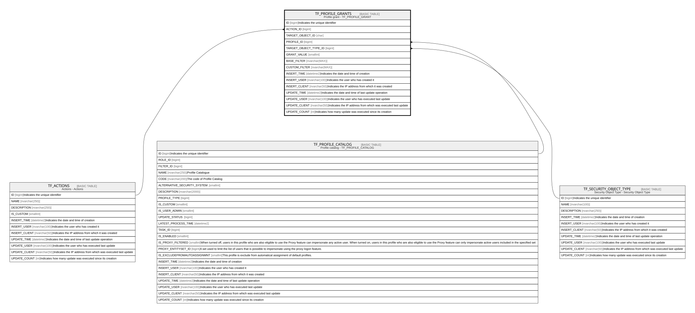

TF_PROFILE_GRANTS
Description
Profile grant - TF_PROFILE_GRANT
Columns
| Name | Type | Default | Nullable | Parents | Comment |
|---|---|---|---|---|---|
| ID | bigint | false | Indicates the unique identifier | ||
| ACTION_ID | bigint | false | TF_ACTIONS | ||
| TARGET_OBJECT_ID | char | false | |||
| PROFILE_ID | bigint | false | TF_PROFILE_CATALOG | ||
| TARGET_OBJECT_TYPE_ID | bigint | false | TF_SECURITY_OBJECT_TYPE | ||
| GRANT_VALUE | smallint | false | |||
| BASE_FILTER | nvarchar(MAX) | (N'#FILTER') | true | ||
| CUSTOM_FILTER | nvarchar(MAX) | true | |||
| INSERT_TIME | datetime2 | (sysutcdatetime()) | false | Indicates the date and time of creation | |
| INSERT_USER | nvarchar(100) | (N'MAIN') | false | Indicates the user who has created it | |
| INSERT_CLIENT | nvarchar(50) | (N'localhost') | false | Indicates the IP address from which it was created | |
| UPDATE_TIME | datetime2 | (sysutcdatetime()) | false | Indicates the date and time of last update operation | |
| UPDATE_USER | nvarchar(100) | (N'MAIN') | false | Indicates the user who has executed last update | |
| UPDATE_CLIENT | nvarchar(50) | (N'localhost') | false | Indicates the IP address from which was executed last update | |
| UPDATE_COUNT | int | ((0)) | false | Indicates how many update was executed since its creation |
Constraints
| Name | Type | Definition |
|---|---|---|
| PK_PROFILE_GRANTS | PRIMARY KEY | CLUSTERED, unique, part of a PRIMARY KEY constraint, [ ID ] |
| UQ_PROFILE_GRANTS_AK | UNIQUE | NONCLUSTERED, unique, part of a UNIQUE constraint, [ PROFILE_ID, ACTION_ID, TARGET_OBJECT_TYPE_ID, TARGET_OBJECT_ID ] |
| FK_PROFILE_GRANTS_ACTIONS | FOREIGN KEY | FOREIGN KEY(ACTION_ID) REFERENCES TF_ACTIONS(ID) ON UPDATE NO_ACTION ON DELETE NO_ACTION |
| FK_PROFILE_GRANTS_OBJ_TYPE | FOREIGN KEY | FOREIGN KEY(TARGET_OBJECT_TYPE_ID) REFERENCES TF_SECURITY_OBJECT_TYPE(ID) ON UPDATE NO_ACTION ON DELETE NO_ACTION |
| FK_PROFILE_GRANTS_PROFILE | FOREIGN KEY | FOREIGN KEY(PROFILE_ID) REFERENCES TF_PROFILE_CATALOG(ID) ON UPDATE NO_ACTION ON DELETE CASCADE |
Indexes
| Name | Definition |
|---|---|
| PK_PROFILE_GRANTS | CLUSTERED, unique, part of a PRIMARY KEY constraint, [ ID ] |
| UQ_PROFILE_GRANTS_AK | NONCLUSTERED, unique, part of a UNIQUE constraint, [ PROFILE_ID, ACTION_ID, TARGET_OBJECT_TYPE_ID, TARGET_OBJECT_ID ] |
Triggers
| Name | Definition |
|---|---|
| AUDIT_TF_PROFILE_GRANTS | -- Talentia Software - All right reserved -- Type: TRIGGER Name: AUDIT_TF_PROFILE_GRANTS -- Date: 09-04-2026 07:27:59 (UTC) -- -- ChangeLogId: 00000000-0000-0000-0000-000000000000 -- ChangeSetId: e170ad40-c512-4eb5-b5d2-56d59f479497 -- Original file name: C:\repos\Talentia-Software\hcm-core/DB/ProductDB/EDM\Schema\Triggers\AUDIT_TF_PROFILE_GRANTS.xml CREATE TRIGGER AUDIT_TF_PROFILE_GRANTS ON TF_PROFILE_GRANTS AFTER INSERT,DELETE,UPDATE AS BEGIN -- SET NOCOUNT ON added to prevent extra result sets from -- interfering with SELECT statements. SET NOCOUNT ON; -- Insert statements for trigger here DECLARE @TableName varchar(100) DECLARE @LinkedEntityID varchar(36) DECLARE @DefAuditPolicyStatus bit DECLARE @OperationType smallint -- Insert 1, Update 2, Delete 3 DECLARE @ColumnKey varchar(100) DECLARE @PrimaryKey int DECLARE @Fields nvarchar(max) DECLARE @PrimaryKeyFieldName nvarchar(100) DECLARE @UpdateDate varchar(23) DECLARE @HasEntityId bit = 0 DECLARE @EntityIdColumn varchar(100) DECLARE @ColumnName nvarchar(max) DECLARE @EntityName nvarchar(max) DECLARE @EntityID char(36) DECLARE @ColumnID char(36) DECLARE @FieldID char(36) DECLARE @FieldName nvarchar(max) DECLARE @FieldType smallint DECLARE @ContextInfo varchar(128) DECLARE @ClientInfo nvarchar(max) DECLARE @DirectSQL bit = 0 DECLARE @SQL nvarchar(max) DECLARE @SQLWorkTable nvarchar(max) DECLARE @SQLWorkTable2 nvarchar(max) DECLARE @SQLWorkTableRef nvarchar(max) DECLARE @SQLStartInsertTo nvarchar(max) DECLARE @SQLPrimaryKeyField nvarchar(max) DECLARE @SQLNewValueFields nvarchar(max) DECLARE @SQLOldValueFields nvarchar(max) DECLARE @SQLInsertUser nvarchar(max) DECLARE @SQLInsertClient nvarchar(max) DECLARE @ListNbLong BigInt = 0 DECLARE @ListLong1 NVARCHAR(MAX) = NULL DECLARE @ListLong2 NVARCHAR(MAX) = NULL DECLARE @ListNbDecimal BigInt = 0 DECLARE @ListDecimal1 NVARCHAR(MAX) = NULL DECLARE @ListDecimal2 NVARCHAR(MAX) = NULL DECLARE @ListNbDateTime BigInt = 0 DECLARE @ListDateTime1 NVARCHAR(MAX) = NULL DECLARE @ListDateTime2 NVARCHAR(MAX) = NULL DECLARE @ListNbStr BigInt = 0 DECLARE @ListStr1 NVARCHAR(MAX) = NULL DECLARE @Liststr2 NVARCHAR(MAX) = NULL DECLARE @ListNbBinary BigInt = 0 DECLARE @ListBinary1 NVARCHAR(MAX) = NULL DECLARE @ListBinary2 NVARCHAR(MAX) = NULL DECLARE @SQLUnion NVARCHAR(MAX) = '' DECLARE @LOOKUP_ENTITY_NAME VARCHAR(100) DECLARE @LOOKUP_ENTITY_ID VARCHAR(36) DECLARE @LOOKUP_COLUMN_NAME VARCHAR(100) DECLARE @LOOKUP_FIELD_NAME VARCHAR(100) DECLARE @LOOKUP_FOCUS NVARCHAR(500) DECLARE @LOOKUP_DESCRIPTION NVARCHAR(500) SET @Tablename = 'TF_PROFILE_GRANTS' --IF AUDITED IS ENABLE SELECT @DefAuditPolicyStatus = CASE WHEN (SELECT ACTIVE FROM TF_AUDIT_SWITCH WHERE ID = 1) = 1 THEN (SELECT CASE WHEN COUNT(ID) > 0 THEN 1 ELSE 0 END FROM TF_AUDITED_COLUMNS WHERE TABLE_NAME = @TableName) ELSE 0 END if (@DefAuditPolicyStatus=1) BEGIN --Get Operation Type if exists (SELECT * FROM inserted) if exists (SELECT * FROM deleted) SELECT @OperationType = 2 --Update else SELECT @OperationType = 1 --Insert else SELECT @OperationType = 3 --Delete --GET HasEntityId SELECT @HasEntityId = CASE WHEN Count(FIELD_NAME) > 0 THEN 1 ELSE 0 END, @EntityIdColumn = RTRIM(COLUMN_NAME) FROM TF_AUDITED_COLUMNS WHERE TABLE_NAME = @Tablename and IS_ENTITY_ID = 1 GROUP BY COLUMN_NAME --GET THE SAME DATE FOR ALL SELECT @UpdateDate = '''' + convert(varchar(8), getutcdate(), 112) + ' ' + convert(varchar(12), getutcdate(), 114) + '''' --Get Primary field name SELECT @PrimaryKeyFieldName = RTRIM(C.NAME) FROM TF_BLPHYSICAL_COLUMNS C INNER JOIN TF_BLPHYSICAL_TABLES T ON C.TABLE_ID = T.ID WHERE C.IS_KEY = 1 AND T.Name = @Tablename --get Context Info IF CONTEXT_INFO() is null BEGIN SELECT @ContextInfo= '' SET @DirectSQL = 1 END ELSE BEGIN -- Context Info should contain the Applicative UserName SELECT @ContextInfo = REPLACE(CAST(CONTEXT_INFO() as varchar(128)), NCHAR(0) COLLATE Latin1_General_100_BIN2, N''); SET @DirectSQL = 0 END --Get Client Info --SELECT @ClientInfo = client_net_address --FROM sys.dm_exec_connections --WHERE Session_id = @@SPID; ----Or --SELECT @ClientInfo = CONVERT(char(15), CONNECTIONPROPERTY('client_net_address')) SET @ClientInfo = SYSTEM_USER -- TEMPORARY TABLES SELECT * INTO #ins FROM inserted SELECT * INTO #del FROM deleted -- Start of the SQL request SET @SQLStartInsertTo = 'INSERT INTO TF_AUDIT ( [TABLE_NAME], [ENTITY_NAME], [ENTITY_ID], [COLUMN_NAME], [FIELD_NAME], [FIELD_ID], [FIELD_TYPE] ,[PRIMARY_KEY], [OPERATION_TYPE] ,[LONG_VALUE],[DECIMAL_VALUE],[DATETIME_VALUE],[STRING_VALUE],[VARBINARY_VALUE],[LOOKUP_DESC] ,[OLD_LONG_VALUE],[OLD_DECIMAL_VALUE],[OLD_DATETIME_VALUE],[OLD_STRING_VALUE],[OLD_VARBINARY_VALUE],[OLD_LOOKUP_DESC] ,[INSERT_USER],[INSERT_CLIENT],[INSERT_TIME],[TRANSACTION_ID] ) ' SELECT @ListNbLong = count() FROM TF_AUDITED_COLUMNS WHERE TF_AUDITED_COLUMNS.TABLE_NAME = @TableName AND TF_AUDITED_COLUMNS.FIELD_TYPE = 2 AND TF_AUDITED_COLUMNS.DESCRIPTION IS NULL SET @ListLong1 = STUFF((SELECT DISTINCT ',' + QUOTENAME(RTRIM(TF_AUDITED_COLUMNS.COLUMN_NAME)) FROM TF_AUDITED_COLUMNS WHERE TF_AUDITED_COLUMNS.TABLE_NAME = @TableName AND TF_AUDITED_COLUMNS.FIELD_TYPE = 2 AND TF_AUDITED_COLUMNS.DESCRIPTION IS NULL FOR XML PATH(''), TYPE).value('.', 'VARCHAR(MAX)') ,1,1,'') SET @ListLong2 = STUFF((SELECT DISTINCT ',CONVERT(bigint, ' + QUOTENAME(RTRIM(TF_AUDITED_COLUMNS.COLUMN_NAME)) +') as ' + QUOTENAME(RTRIM(TF_AUDITED_COLUMNS.COLUMN_NAME)) FROM TF_AUDITED_COLUMNS WHERE TF_AUDITED_COLUMNS.TABLE_NAME = @TableName AND TF_AUDITED_COLUMNS.FIELD_TYPE = 2 AND TF_AUDITED_COLUMNS.DESCRIPTION IS NULL FOR XML PATH(''), TYPE).value('.', 'VARCHAR(MAX)') ,1,1,'') SELECT @ListNbDecimal = count() FROM TF_AUDITED_COLUMNS WHERE TF_AUDITED_COLUMNS.TABLE_NAME = @TableName AND TF_AUDITED_COLUMNS.FIELD_TYPE = 3 SET @ListDecimal1 = STUFF((SELECT DISTINCT ',' + QUOTENAME(RTRIM(TF_AUDITED_COLUMNS.COLUMN_NAME) ) FROM TF_AUDITED_COLUMNS WHERE TF_AUDITED_COLUMNS.TABLE_NAME = @TableName AND TF_AUDITED_COLUMNS.FIELD_TYPE = 3 FOR XML PATH(''), TYPE).value('.', 'VARCHAR(MAX)') ,1,1,'') SET @ListDecimal2 = STUFF((SELECT DISTINCT ',CONVERT(decimal, ' + QUOTENAME(RTRIM(TF_AUDITED_COLUMNS.COLUMN_NAME)) +') as ' + QUOTENAME(RTRIM(TF_AUDITED_COLUMNS.COLUMN_NAME)) FROM TF_AUDITED_COLUMNS WHERE TF_AUDITED_COLUMNS.TABLE_NAME = @TableName AND TF_AUDITED_COLUMNS.FIELD_TYPE = 3 FOR XML PATH(''), TYPE).value('.', 'VARCHAR(MAX)') ,1,1,'') SELECT @ListNbDateTime = count() FROM TF_AUDITED_COLUMNS WHERE TF_AUDITED_COLUMNS.TABLE_NAME = @TableName AND TF_AUDITED_COLUMNS.FIELD_TYPE = 4 SET @ListDateTime1 = STUFF((SELECT DISTINCT ',' + QUOTENAME(RTRIM(TF_AUDITED_COLUMNS.COLUMN_NAME)) FROM TF_AUDITED_COLUMNS WHERE TF_AUDITED_COLUMNS.TABLE_NAME = @TableName AND TF_AUDITED_COLUMNS.FIELD_TYPE = 4 FOR XML PATH(''), TYPE).value('.', 'VARCHAR(MAX)') ,1,1,'') SET @ListDateTime2 = STUFF((SELECT DISTINCT ',CONVERT(datetime2, ' + QUOTENAME(RTRIM(TF_AUDITED_COLUMNS.COLUMN_NAME)) +') as ' + QUOTENAME(RTRIM(TF_AUDITED_COLUMNS.COLUMN_NAME)) FROM TF_AUDITED_COLUMNS WHERE TF_AUDITED_COLUMNS.TABLE_NAME = @TableName AND TF_AUDITED_COLUMNS.FIELD_TYPE = 4 FOR XML PATH(''), TYPE).value('.', 'VARCHAR(MAX)') ,1,1,'') SELECT @ListNbStr = count() FROM TF_AUDITED_COLUMNS WHERE TF_AUDITED_COLUMNS.TABLE_NAME = @TableName AND TF_AUDITED_COLUMNS.FIELD_TYPE = 1 SET @ListStr1 = STUFF((SELECT DISTINCT ',' + QUOTENAME(RTRIM(TF_AUDITED_COLUMNS.COLUMN_NAME)) FROM TF_AUDITED_COLUMNS WHERE TF_AUDITED_COLUMNS.TABLE_NAME = @TableName AND TF_AUDITED_COLUMNS.FIELD_TYPE = 1 FOR XML PATH(''), TYPE).value('.', 'VARCHAR(MAX)') ,1,1,'') SET @ListStr2 = STUFF((SELECT DISTINCT ',CONVERT(nvarchar(max), ' + QUOTENAME(RTRIM(TF_AUDITED_COLUMNS.COLUMN_NAME)) +') as ' + QUOTENAME(RTRIM(TF_AUDITED_COLUMNS.COLUMN_NAME)) FROM TF_AUDITED_COLUMNS WHERE TF_AUDITED_COLUMNS.TABLE_NAME = @TableName AND TF_AUDITED_COLUMNS.FIELD_TYPE = 1 FOR XML PATH(''), TYPE).value('.', 'VARCHAR(MAX)') ,1,1,'') SELECT @ListNbBinary = count(*) FROM TF_AUDITED_COLUMNS WHERE TF_AUDITED_COLUMNS.TABLE_NAME = @TableName AND TF_AUDITED_COLUMNS.FIELD_TYPE = 5 SET @ListBinary1 = STUFF((SELECT DISTINCT ',' + QUOTENAME(RTRIM(TF_AUDITED_COLUMNS.COLUMN_NAME)) FROM TF_AUDITED_COLUMNS WHERE TF_AUDITED_COLUMNS.TABLE_NAME = @TableName AND TF_AUDITED_COLUMNS.FIELD_TYPE = 5 FOR XML PATH(''), TYPE).value('.', 'VARCHAR(MAX)') ,1,1,'') SET @ListBinary2 = STUFF((SELECT DISTINCT ',CONVERT(varbinary(max), ' + QUOTENAME(RTRIM(TF_AUDITED_COLUMNS.COLUMN_NAME)) +') as ' + QUOTENAME(RTRIM(TF_AUDITED_COLUMNS.COLUMN_NAME)) FROM TF_AUDITED_COLUMNS WHERE TF_AUDITED_COLUMNS.TABLE_NAME = @TableName AND TF_AUDITED_COLUMNS.FIELD_TYPE = 5 FOR XML PATH(''), TYPE).value('.', 'VARCHAR(MAX)') ,1,1,'') IF (@HasEntityId = 0) BEGIN -- INSERTED OPERATION TYPE IF(@OperationType = 1) BEGIN SET @SQLWorkTable = '#ins' SET @SQLWorkTableRef = @SQLWOrkTable + '.' SET @SQLPrimaryKeyField = @SQLWorkTableRef + @PrimaryKeyFieldName SET @SQLInsertUser = '''' + Replace(@ContextInfo,'''','''''') + '''' SET @SQLInsertClient = '''' + @ClientInfo + '''' if @ListNbLong > 0 BEGIN If @SQLUNION <> '' BEGIN SET @SQLUNION = @SQLUNION + ' UNION ' END SET @SQLUNION = @SQLUNION + '( SELECT AUDITED_COLUMNS.[TABLE_NAME], AUDITED_COLUMNS.[ENTITY_NAME], AUDITED_COLUMNS.[ENTITY_ID], AUDITED_COLUMNS.[COLUMN_NAME], AUDITED_COLUMNS.[FIELD_NAME], AUDITED_COLUMNS.[FIELD_ID], AUDITED_COLUMNS.[FIELD_TYPE], A.#PK, 1, A.#LVALUE, A.#DVALUE, A.#TVALUE, A.#SVALUE, A.#BVALUE, NULL, NULL, NULL, NULL, NULL, NULL, NULL, ' + @SQLInsertUser + ',' + @SQLInsertClient +', ' + @UpdateDate + ', CURRENT_TRANSACTION_ID() FROM TF_AUDITED_COLUMNS AUDITED_COLUMNS INNER JOIN (SELECT #COL, #PK, value #LVALUE, NULL #DVALUE, NULL #TVALUE, NULL AS #SVALUE, NULL AS #BVALUE FROM (SELECT ' + @PrimaryKeyFieldName + ' AS #PK, ' + @ListLong2 +' FROM ' + @SQLWorkTable +' ) p UNPIVOT (value FOR #COL IN ('+@ListLong1+')) as unpvt) A ON AUDITED_COLUMNS.TABLE_NAME = '''+@TableName+''' AND AUDITED_COLUMNS.COLUMN_NAME = A.#COL )' END if @ListNbDecimal > 0 BEGIN If @SQLUNION <> '' BEGIN SET @SQLUNION = @SQLUNION + ' UNION ' END SET @SQLUNION = @SQLUNION + '( SELECT AUDITED_COLUMNS.[TABLE_NAME], AUDITED_COLUMNS.[ENTITY_NAME], AUDITED_COLUMNS.[ENTITY_ID], AUDITED_COLUMNS.[COLUMN_NAME], AUDITED_COLUMNS.[FIELD_NAME], AUDITED_COLUMNS.[FIELD_ID], AUDITED_COLUMNS.[FIELD_TYPE], A.#PK, 1, A.#LVALUE, A.#DVALUE, A.#TVALUE, A.#SVALUE, A.#BVALUE, NULL, NULL, NULL, NULL, nULL, NULL, NULL, ' + @SQLInsertUser + ',' + @SQLInsertClient +', ' + @UpdateDate + ', CURRENT_TRANSACTION_ID() FROM TF_AUDITED_COLUMNS AUDITED_COLUMNS INNER JOIN (SELECT #COL, #PK, NULL #LVALUE, value #DVALUE, NULL #TVALUE, NULL AS #SVALUE, NULL AS #BVALUE FROM (SELECT ' + @PrimaryKeyFieldName + ' AS #PK, ' + @ListDecimal2 +' FROM ' + @SQLWorkTable + ') p UNPIVOT (value FOR #COL IN ('+@ListDecimal1+')) as unpvt) A ON AUDITED_COLUMNS.TABLE_NAME = ''' + @TableName + ''' AND AUDITED_COLUMNS.COLUMN_NAME = A.#COL )' END if @ListNbDateTime > 0 BEGIN If @SQLUNION <> '' BEGIN SET @SQLUNION = @SQLUNION + ' UNION ' END SET @SQLUNION = @SQLUNION + '( SELECT AUDITED_COLUMNS.[TABLE_NAME], AUDITED_COLUMNS.[ENTITY_NAME], AUDITED_COLUMNS.[ENTITY_ID], AUDITED_COLUMNS.[COLUMN_NAME], AUDITED_COLUMNS.[FIELD_NAME], AUDITED_COLUMNS.[FIELD_ID], AUDITED_COLUMNS.[FIELD_TYPE], A.#PK, 1, A.#LVALUE, A.#DVALUE, A.#TVALUE, A.#SVALUE, A.#BVALUE, NULL, NULL, NULL, NULL, nULL, NULL, NULL, ' + @SQLInsertUser + ',' + @SQLInsertClient +', ' + @UpdateDate + ', CURRENT_TRANSACTION_ID() FROM TF_AUDITED_COLUMNS AUDITED_COLUMNS INNER JOIN (SELECT #COL, #PK, NULL #LVALUE, NULL #DVALUE, value #TVALUE, NULL AS #SVALUE, NULL AS #BVALUE FROM (SELECT ' + @PrimaryKeyFieldName + ' AS #PK, ' + @ListDateTime2 +' FROM ' + @SQLWorkTable + ') p UNPIVOT (value FOR #COL IN ('+@ListDateTime1+')) as unpvt) A ON AUDITED_COLUMNS.TABLE_NAME = ''' + @TableName + ''' AND AUDITED_COLUMNS.COLUMN_NAME = A.#COL )' END if @ListNbStr > 0 BEGIN If @SQLUNION <> '' BEGIN SET @SQLUNION = @SQLUNION + ' UNION ' END SET @SQLUNION = @SQLUNION + '( SELECT AUDITED_COLUMNS.[TABLE_NAME], AUDITED_COLUMNS.[ENTITY_NAME], AUDITED_COLUMNS.[ENTITY_ID], AUDITED_COLUMNS.[COLUMN_NAME], AUDITED_COLUMNS.[FIELD_NAME], AUDITED_COLUMNS.[FIELD_ID], AUDITED_COLUMNS.[FIELD_TYPE], A.#PK, 1, A.#LVALUE, A.#DVALUE, A.#TVALUE, A.#SVALUE, A.#BVALUE, NULL, NULL, NULL, NULL, nULL, NULL, NULL, ' + @SQLInsertUser + ',' + @SQLInsertClient +', ' + @UpdateDate + ', CURRENT_TRANSACTION_ID() FROM TF_AUDITED_COLUMNS AUDITED_COLUMNS INNER JOIN (SELECT #COL, #PK, NULL #LVALUE, NULL #DVALUE, NULL #TVALUE, value AS #SVALUE, NULL AS #BVALUE FROM (SELECT ' + @PrimaryKeyFieldName + ' AS #PK, ' + @ListStr2 +' FROM ' + @SQLWorkTable + ') p UNPIVOT (value FOR #COL IN ('+@ListStr1+')) as unpvt) A ON AUDITED_COLUMNS.TABLE_NAME = ''' + @TableName + ''' AND AUDITED_COLUMNS.COLUMN_NAME = A.#COL )' END if @ListNbBinary > 0 BEGIN If @SQLUNION <> '' BEGIN SET @SQLUNION = @SQLUNION + ' UNION ' END SET @SQLUNION = @SQLUNION + '( SELECT AUDITED_COLUMNS.[TABLE_NAME], AUDITED_COLUMNS.[ENTITY_NAME], AUDITED_COLUMNS.[ENTITY_ID], AUDITED_COLUMNS.[COLUMN_NAME], AUDITED_COLUMNS.[FIELD_NAME], AUDITED_COLUMNS.[FIELD_ID], AUDITED_COLUMNS.[FIELD_TYPE], A.#PK, 1, A.#LVALUE, A.#DVALUE, A.#TVALUE, A.#SVALUE, A.#BVALUE, NULL, NULL, NULL, NULL, NULL, NULL, NULL, ' + @SQLInsertUser + ',' + @SQLInsertClient +', ' + @UpdateDate + ', CURRENT_TRANSACTION_ID() FROM TF_AUDITED_COLUMNS AUDITED_COLUMNS INNER JOIN (SELECT #COL, #PK, NULL #LVALUE, NULL #DVALUE, NULL #TVALUE, NULL #SVALUE, value AS #BVALUE FROM (SELECT ' + @PrimaryKeyFieldName + ' AS #PK, ' + @ListBinary2 +' FROM ' + @SQLWorkTable + ') p UNPIVOT (value FOR #COL IN ('+@ListBinary1+')) as unpvt) A ON AUDITED_COLUMNS.TABLE_NAME = ''' + @TableName + ''' AND AUDITED_COLUMNS.COLUMN_NAME = A.#COL )' END DECLARE LOOKUP_CURSOR CURSOR FOR SELECT RTRIM(ENTITY_NAME) AS ENTITY_NAME, ENTITY_ID, RTRIM(COLUMN_NAME) AS COLUMN_NAME, RTRIM(FIELD_NAME) AS FIELD_NAME, RTRIM(FOCUS) AS FOCUS, RTRIM(DESCRIPTION) AS DESCRPTION FROM TF_AUDITED_COLUMNS WHERE TF_AUDITED_COLUMNS.TABLE_NAME = @TableName AND TF_AUDITED_COLUMNS.FIELD_TYPE = 2 AND TF_AUDITED_COLUMNS.DESCRIPTION IS not NULL AND IS_KEY = 0 OPEN LOOKUP_CURSOR FETCH NEXT FROM LOOKUP_CURSOR into @LOOKUP_ENTITY_NAME, @LOOKUP_ENTITY_ID, @LOOKUP_COLUMN_NAME, @LOOKUP_FIELD_NAME, @LOOKUP_FOCUS, @LOOKUP_DESCRIPTION WHILE @@FETCH_STATUS = 0 BEGIN IF @SQLUNION <> '' BEGIN SET @SQLUNION = @SQLUNION + ' UNION ' END SET @SQLUNION = @SQLUNION + ' ( SELECT AUDITED_COLUMNS.[TABLE_NAME], AUDITED_COLUMNS.[ENTITY_NAME], AUDITED_COLUMNS.[ENTITY_ID], AUDITED_COLUMNS.[COLUMN_NAME], AUDITED_COLUMNS.[FIELD_NAME], AUDITED_COLUMNS.[FIELD_ID], AUDITED_COLUMNS.[FIELD_TYPE], A.#PK, 1, A.#LVALUE, A.#DVALUE, A.#TVALUE, A.#SVALUE, A.#BVALUE, A.#LOOKUP_DESC, NULL, NULL, NULL, NULL, NULL, NULL, ' + @SQLInsertUser + ',' + @SQLInsertClient +', ' + @UpdateDate + ', CURRENT_TRANSACTION_ID() FROM TF_AUDITED_COLUMNS AUDITED_COLUMNS INNER JOIN (SELECT #COL, #PK, value #LVALUE, NULL #DVALUE, NULL #TVALUE, NULL AS #SVALUE, NULL AS #BVALUE, #LOOKUP_DESC FROM (SELECT ' + @PrimaryKeyFieldName + ' AS #PK, ' +@LOOKUP_COLUMN_NAME +', #LOOKUP.LOOKUP_DESCRIPTION as #LOOKUP_DESC FROM ' + @SQLWorkTable + ' LEFT OUTER JOIN (' + @LOOKUP_DESCRIPTION + ') #LOOKUP ON ' + @SQLWorkTable + '.' +@LOOKUP_COLUMN_NAME + ' = #LOOKUP.ID_LOOKUP' + ') p UNPIVOT (value FOR #COL IN ('+@LOOKUP_COLUMN_NAME+')) as unpvt) A ON AUDITED_COLUMNS.TABLE_NAME = ''' + @TableName + ''' AND AUDITED_COLUMNS.COLUMN_NAME = A.#COL ) ' FETCH NEXT FROM LOOKUP_CURSOR into @LOOKUP_ENTITY_NAME, @LOOKUP_ENTITY_ID, @LOOKUP_COLUMN_NAME, @LOOKUP_FIELD_NAME, @LOOKUP_FOCUS, @LOOKUP_DESCRIPTION END CLOSE LOOKUP_CURSOR; DEALLOCATE LOOKUP_CURSOR; SET @SQL = @SQLStartInsertTo + @SQLUNION EXEC ( @Sql ) END -- UPDATED OPERATION TYPE IF(@OperationType = 2) BEGIN SET @SQLWorkTable = '#ins' SET @SQLWorkTable2 = '#del' SET @SQLWorkTableRef = @SQLWOrkTable + '.' SET @SQLPrimaryKeyField = @SQLWorkTableRef + @PrimaryKeyFieldName SET @SQLInsertUser = '''' + Replace(@ContextInfo,'''','''''') + '''' SET @SQLInsertClient = '''' + @ClientInfo + '''' if @ListNbLong > 0 BEGIN If @SQLUNION <> '' BEGIN SET @SQLUNION = @SQLUNION + ' UNION ' END SET @SQLUNION = @SQLUNION + ' ( SELECT AUDITED_COLUMNS.[TABLE_NAME], AUDITED_COLUMNS.[ENTITY_NAME], AUDITED_COLUMNS.[ENTITY_ID], AUDITED_COLUMNS.[COLUMN_NAME], AUDITED_COLUMNS.[FIELD_NAME], AUDITED_COLUMNS.[FIELD_ID], AUDITED_COLUMNS.[FIELD_TYPE], C.#PK, 2, C.#LVALUE, C.#DVALUE, C.#TVALUE, C.#SVALUE, C.#BVALUE, C.#LOOKUPDESC, C.#OLDLVALUE, C.#OLDDVALUE, C.#OLDTVALUE, C.#OLDSVALUE, C.#OLDBVALUE, C.#OLDLOOKUPDESC, ' + @SQLInsertUser + ',' + @SQLInsertClient +', ' + @UpdateDate + ', CURRENT_TRANSACTION_ID() FROM TF_AUDITED_COLUMNS AUDITED_COLUMNS INNER JOIN ( SELECT case WHEN A.#COL is null then B.#COL else A.#COL END #COL, case WHEN A.#PK is null then B.#PK else A.#PK END #PK, A.#LVALUE #LVALUE, A.#DVALUE #DVALUE, A.#TVALUE #TVALUE, A.#SVALUE #SVALUE, A.#BVALUE #BVALUE, A.#LOOKUP_DESC #LOOKUPDESC, B.#LVALUE #OLDLVALUE, B.#DVALUE #OLDDVALUE, B.#TVALUE #OLDTVALUE, B.#SVALUE #OLDSVALUE, B.#BVALUE #OLDBVALUE, B.#LOOKUP_DESC #OLDLOOKUPDESC FROM ( SELECT #COL, #PK, value #LVALUE, NULL #DVALUE, NULL #TVALUE, NULL AS #SVALUE, NULL AS #BVALUE, NULL as #LOOKUP_DESC FROM (SELECT ' + @PrimaryKeyFieldName + ' AS #PK, ' + @ListLong2 +' FROM ' + @SQLWorkTable +' ) p UNPIVOT (value FOR #COL IN ('+@ListLong1+')) as unpvt ) A FULL JOIN ( SELECT #COL, #PK, value #LVALUE, NULL #DVALUE, NULL #TVALUE, NULL AS #SVALUE, NULL AS #BVALUE, NULL as #LOOKUP_DESC FROM (SELECT ' + @PrimaryKeyFieldName + ' AS #PK, ' + @ListLong2 +' FROM ' + @SQLWorkTable2 +' ) p UNPIVOT (value FOR #COL IN ('+@ListLong1+')) as unpvt ) B ON A.#COL = B.#COL AND A.#PK = B.#PK WHERE (A.#LVALUE is NULL AND B.#LVALUE IS NOT NULL) OR (A.#LVALUE IS NOT NULL AND B.#LVALUE IS NULL) OR (B.#LVALUE <> A.#LVALUE) ) C ON AUDITED_COLUMNS.TABLE_NAME = '''+@TableName+''' AND AUDITED_COLUMNS.COLUMN_NAME = C.#COL )' END if @ListNbDecimal > 0 BEGIN If @SQLUNION <> '' BEGIN SET @SQLUNION = @SQLUNION + ' UNION ' END SET @SQLUNION = @SQLUNION + ' ( SELECT AUDITED_COLUMNS.[TABLE_NAME], AUDITED_COLUMNS.[ENTITY_NAME], AUDITED_COLUMNS.[ENTITY_ID], AUDITED_COLUMNS.[COLUMN_NAME], AUDITED_COLUMNS.[FIELD_NAME], AUDITED_COLUMNS.[FIELD_ID], AUDITED_COLUMNS.[FIELD_TYPE], C.#PK, 2, C.#LVALUE, C.#DVALUE, C.#TVALUE, C.#SVALUE, C.#BVALUE, C.#LOOKUPDESC, C.#OLDLVALUE, C.#OLDDVALUE, C.#OLDTVALUE, C.#OLDSVALUE, C.#OLDBVALUE, C.#OLDLOOKUPDESC, ' + @SQLInsertUser + ',' + @SQLInsertClient +', ' + @UpdateDate + ', CURRENT_TRANSACTION_ID() FROM TF_AUDITED_COLUMNS AUDITED_COLUMNS INNER JOIN ( SELECT case WHEN A.#COL is null then B.#COL else A.#COL END #COL, case WHEN A.#PK is null then B.#PK else A.#PK END #PK, A.#LVALUE #LVALUE, A.#DVALUE #DVALUE, A.#TVALUE #TVALUE, A.#SVALUE #SVALUE, A.#BVALUE #BVALUE, A.#LOOKUP_DESC #LOOKUPDESC, B.#LVALUE #OLDLVALUE, B.#DVALUE #OLDDVALUE, B.#TVALUE #OLDTVALUE, B.#SVALUE #OLDSVALUE, B.#BVALUE #OLDBVALUE, B.#LOOKUP_DESC #OLDLOOKUPDESC FROM ( SELECT #COL, #PK, NULL #LVALUE, value #DVALUE, NULL #TVALUE, NULL AS #SVALUE, NULL AS #BVALUE, NULL as #LOOKUP_DESC FROM (SELECT ' + @PrimaryKeyFieldName + ' AS #PK, ' + @ListDecimal2 +' FROM ' + @SQLWorkTable + ') p UNPIVOT (value FOR #COL IN ('+@ListDecimal1+')) as unpvt ) A FULL JOIN ( SELECT #COL, #PK, NULL #LVALUE, value #DVALUE, NULL #TVALUE, NULL AS #SVALUE, NULL AS #BVALUE, NULL as #LOOKUP_DESC FROM (SELECT ' + @PrimaryKeyFieldName + ' AS #PK, ' + @ListDecimal2 +' FROM ' + @SQLWorkTable2 + ') p UNPIVOT (value FOR #COL IN ('+@ListDecimal1+')) as unpvt ) B ON A.#COL = B.#COL AND A.#PK = B.#PK WHERE (A.#DVALUE is NULL AND B.#DVALUE IS NOT NULL) OR (A.#DVALUE IS NOT NULL AND B.#DVALUE IS NULL) OR (B.#DVALUE <> A.#DVALUE) ) C ON AUDITED_COLUMNS.TABLE_NAME = '''+@TableName+''' AND AUDITED_COLUMNS.COLUMN_NAME = C.#COL )' END if @ListNbDateTime > 0 BEGIN If @SQLUNION <> '' BEGIN SET @SQLUNION = @SQLUNION + ' UNION ' END SET @SQLUNION = @SQLUNION + ' ( SELECT AUDITED_COLUMNS.[TABLE_NAME], AUDITED_COLUMNS.[ENTITY_NAME], AUDITED_COLUMNS.[ENTITY_ID], AUDITED_COLUMNS.[COLUMN_NAME], AUDITED_COLUMNS.[FIELD_NAME], AUDITED_COLUMNS.[FIELD_ID], AUDITED_COLUMNS.[FIELD_TYPE], C.#PK, 2, C.#LVALUE, C.#DVALUE, C.#TVALUE, C.#SVALUE, C.#BVALUE, C.#LOOKUPDESC, C.#OLDLVALUE, C.#OLDDVALUE, C.#OLDTVALUE, C.#OLDSVALUE, C.#OLDBVALUE, C.#OLDLOOKUPDESC, ' + @SQLInsertUser + ',' + @SQLInsertClient +', ' + @UpdateDate + ', CURRENT_TRANSACTION_ID() FROM TF_AUDITED_COLUMNS AUDITED_COLUMNS INNER JOIN ( SELECT case WHEN A.#COL is null then B.#COL else A.#COL END #COL, case WHEN A.#PK is null then B.#PK else A.#PK END #PK, A.#LVALUE #LVALUE, A.#DVALUE #DVALUE, A.#TVALUE #TVALUE, A.#SVALUE #SVALUE, A.#BVALUE #BVALUE, A.#LOOKUP_DESC #LOOKUPDESC, B.#LVALUE #OLDLVALUE, B.#DVALUE #OLDDVALUE, B.#TVALUE #OLDTVALUE, B.#SVALUE #OLDSVALUE, B.#BVALUE #OLDBVALUE, B.#LOOKUP_DESC #OLDLOOKUPDESC FROM ( SELECT #COL, #PK, NULL #LVALUE, NULL #DVALUE, value #TVALUE, NULL AS #SVALUE, NULL AS #BVALUE, NULL as #LOOKUP_DESC FROM (SELECT ' + @PrimaryKeyFieldName + ' AS #PK, ' + @ListDateTime2 +' FROM ' + @SQLWorkTable + ') p UNPIVOT (value FOR #COL IN ('+@ListDateTime1+')) as unpvt ) A FULL JOIN ( SELECT #COL, #PK, NULL #LVALUE, NULL #DVALUE, value #TVALUE, NULL AS #SVALUE, NULL AS #BVALUE, NULL as #LOOKUP_DESC FROM (SELECT ' + @PrimaryKeyFieldName + ' AS #PK, ' + @ListDateTime2 +' FROM ' + @SQLWorkTable2 + ') p UNPIVOT (value FOR #COL IN ('+@ListDateTime1+')) as unpvt ) B ON A.#COL = B.#COL AND A.#PK = B.#PK WHERE (A.#TVALUE is NULL AND B.#TVALUE IS NOT NULL) OR (A.#TVALUE IS NOT NULL AND B.#TVALUE IS NULL) OR (B.#TVALUE <> A.#TVALUE) ) C ON AUDITED_COLUMNS.TABLE_NAME = '''+@TableName+''' AND AUDITED_COLUMNS.COLUMN_NAME = C.#COL )' END if @ListNbStr > 0 BEGIN If @SQLUNION <> '' BEGIN SET @SQLUNION = @SQLUNION + ' UNION ' END SET @SQLUNION = @SQLUNION + ' ( SELECT AUDITED_COLUMNS.[TABLE_NAME], AUDITED_COLUMNS.[ENTITY_NAME], AUDITED_COLUMNS.[ENTITY_ID], AUDITED_COLUMNS.[COLUMN_NAME], AUDITED_COLUMNS.[FIELD_NAME], AUDITED_COLUMNS.[FIELD_ID], AUDITED_COLUMNS.[FIELD_TYPE], C.#PK, 2, C.#LVALUE, C.#DVALUE, C.#TVALUE, C.#SVALUE, C.#BVALUE, C.#LOOKUPDESC, C.#OLDLVALUE, C.#OLDDVALUE, C.#OLDTVALUE, C.#OLDSVALUE, C.#OLDBVALUE, C.#OLDLOOKUPDESC, ' + @SQLInsertUser + ',' + @SQLInsertClient +', ' + @UpdateDate + ', CURRENT_TRANSACTION_ID() FROM TF_AUDITED_COLUMNS AUDITED_COLUMNS INNER JOIN ( SELECT case WHEN A.#COL is null then B.#COL else A.#COL END #COL, case WHEN A.#PK is null then B.#PK else A.#PK END #PK, A.#LVALUE #LVALUE, A.#DVALUE #DVALUE, A.#TVALUE #TVALUE, A.#SVALUE #SVALUE, A.#BVALUE #BVALUE, A.#LOOKUP_DESC #LOOKUPDESC, B.#LVALUE #OLDLVALUE, B.#DVALUE #OLDDVALUE, B.#TVALUE #OLDTVALUE, B.#SVALUE #OLDSVALUE, B.#BVALUE #OLDBVALUE, B.#LOOKUP_DESC #OLDLOOKUPDESC FROM ( SELECT #COL, #PK, NULL #LVALUE, NULL #DVALUE, NULL #TVALUE, value AS #SVALUE, NULL AS #BVALUE, NULL as #LOOKUP_DESC FROM (SELECT ' + @PrimaryKeyFieldName + ' AS #PK, ' + @ListStr2 +' FROM ' + @SQLWorkTable + ') p UNPIVOT (value FOR #COL IN ('+@ListStr1+')) as unpvt ) A FULL JOIN ( SELECT #COL, #PK, NULL #LVALUE, NULL #DVALUE, NULL #TVALUE, value AS #SVALUE, NULL AS #BVALUE, NULL as #LOOKUP_DESC FROM (SELECT ' + @PrimaryKeyFieldName + ' AS #PK, ' + @ListStr2 +' FROM ' + @SQLWorkTable2 + ') p UNPIVOT (value FOR #COL IN ('+@ListStr1+')) as unpvt ) B ON A.#COL = B.#COL AND A.#PK = B.#PK WHERE (A.#SVALUE is NULL AND B.#SVALUE IS NOT NULL) OR (A.#SVALUE IS NOT NULL AND B.#SVALUE IS NULL) OR (B.#SVALUE <> A.#SVALUE) ) C ON AUDITED_COLUMNS.TABLE_NAME = '''+@TableName+''' AND AUDITED_COLUMNS.COLUMN_NAME = C.#COL )' END if @ListNbBinary > 0 BEGIN If @SQLUNION <> '' BEGIN SET @SQLUNION = @SQLUNION + ' UNION ' END SET @SQLUNION = @SQLUNION + ' ( SELECT AUDITED_COLUMNS.[TABLE_NAME], AUDITED_COLUMNS.[ENTITY_NAME], AUDITED_COLUMNS.[ENTITY_ID], AUDITED_COLUMNS.[COLUMN_NAME], AUDITED_COLUMNS.[FIELD_NAME], AUDITED_COLUMNS.[FIELD_ID], AUDITED_COLUMNS.[FIELD_TYPE], C.#PK, 2, C.#LVALUE, C.#DVALUE, C.#TVALUE, C.#SVALUE, C.#BVALUE, C.#LOOKUPDESC, C.#OLDLVALUE, C.#OLDDVALUE, C.#OLDTVALUE, C.#OLDSVALUE, C.#OLDBVALUE, C.#OLDLOOKUPDESC, ' + @SQLInsertUser + ',' + @SQLInsertClient +', ' + @UpdateDate + ', CURRENT_TRANSACTION_ID() FROM TF_AUDITED_COLUMNS AUDITED_COLUMNS INNER JOIN ( SELECT case WHEN A.#COL is null then B.#COL else A.#COL END #COL, case WHEN A.#PK is null then B.#PK else A.#PK END #PK, A.#LVALUE #LVALUE, A.#DVALUE #DVALUE, A.#TVALUE #TVALUE, A.#SVALUE #SVALUE, A.#BVALUE #BVALUE, A.#LOOKUP_DESC #LOOKUPDESC, B.#LVALUE #OLDLVALUE, B.#DVALUE #OLDDVALUE, B.#TVALUE #OLDTVALUE, B.#SVALUE #OLDSVALUE, B.#BVALUE #OLDBVALUE, B.#LOOKUP_DESC #OLDLOOKUPDESC FROM ( SELECT #COL, #PK, NULL #LVALUE, NULL #DVALUE, NULL #TVALUE, NULL #SVALUE, value AS #BVALUE, NULL as #LOOKUP_DESC FROM (SELECT ' + @PrimaryKeyFieldName + ' AS #PK, ' + @ListBinary2 +' FROM ' + @SQLWorkTable + ') p UNPIVOT (value FOR #COL IN ('+@ListBinary1+')) as unpvt ) A FULL JOIN ( SELECT #COL, #PK, NULL #LVALUE, NULL #DVALUE, NULL #TVALUE, NULL #SVALUE, value AS #BVALUE, NULL as #LOOKUP_DESC FROM (SELECT ' + @PrimaryKeyFieldName + ' AS #PK, ' + @ListBinary2 +' FROM ' + @SQLWorkTable2 + ') p UNPIVOT (value FOR #COL IN ('+@ListBinary1+')) as unpvt ) B ON A.#COL = B.#COL AND A.#PK = B.#PK WHERE (A.#BVALUE is NULL AND B.#BVALUE IS NOT NULL) OR (A.#BVALUE IS NOT NULL AND B.#BVALUE IS NULL) OR (B.#BVALUE <> A.#BVALUE) ) C ON AUDITED_COLUMNS.TABLE_NAME = '''+@TableName+''' AND AUDITED_COLUMNS.COLUMN_NAME = C.#COL )' END DECLARE LOOKUP_CURSOR CURSOR FOR SELECT RTRIM(ENTITY_NAME) AS ENTITY_NAME, ENTITY_ID, RTRIM(COLUMN_NAME) AS COLUMN_NAME, RTRIM(FIELD_NAME) AS FIELD_NAME, RTRIM(FOCUS) AS FOCUS, RTRIM(DESCRIPTION) AS DESCRPTION FROM TF_AUDITED_COLUMNS WHERE TF_AUDITED_COLUMNS.TABLE_NAME = @TableName AND TF_AUDITED_COLUMNS.FIELD_TYPE = 2 AND TF_AUDITED_COLUMNS.DESCRIPTION IS not NULL AND IS_KEY = 0 OPEN LOOKUP_CURSOR FETCH NEXT FROM LOOKUP_CURSOR into @LOOKUP_ENTITY_NAME, @LOOKUP_ENTITY_ID, @LOOKUP_COLUMN_NAME, @LOOKUP_FIELD_NAME, @LOOKUP_FOCUS, @LOOKUP_DESCRIPTION WHILE @@FETCH_STATUS = 0 BEGIN IF @SQLUNION <> '' BEGIN SET @SQLUNION = @SQLUNION + ' UNION ' END SET @SQLUNION = @SQLUNION + ' ( SELECT AUDITED_COLUMNS.[TABLE_NAME], AUDITED_COLUMNS.[ENTITY_NAME], AUDITED_COLUMNS.[ENTITY_ID], AUDITED_COLUMNS.[COLUMN_NAME], AUDITED_COLUMNS.[FIELD_NAME], AUDITED_COLUMNS.[FIELD_ID], AUDITED_COLUMNS.[FIELD_TYPE], C.#PK, 2, C.#LVALUE, C.#DVALUE, C.#TVALUE, C.#SVALUE, C.#BVALUE, C.#LOOKUPDESC, C.#OLDLVALUE, C.#OLDDVALUE, C.#OLDTVALUE, C.#OLDSVALUE, C.#OLDBVALUE, C.#OLDLOOKUPDESC, ' + @SQLInsertUser + ',' + @SQLInsertClient +', ' + @UpdateDate + ', CURRENT_TRANSACTION_ID() FROM TF_AUDITED_COLUMNS AUDITED_COLUMNS INNER JOIN ( SELECT case WHEN A.#COL is null then B.#COL else A.#COL END #COL, case WHEN A.#PK is null then B.#PK else A.#PK END #PK, A.#LVALUE #LVALUE, A.#DVALUE #DVALUE, A.#TVALUE #TVALUE, A.#SVALUE #SVALUE, A.#BVALUE #BVALUE, A.#LOOKUP_DESC #LOOKUPDESC, B.#LVALUE #OLDLVALUE, B.#DVALUE #OLDDVALUE, B.#TVALUE #OLDTVALUE, B.#SVALUE #OLDSVALUE, B.#BVALUE #OLDBVALUE, B.#LOOKUP_DESC #OLDLOOKUPDESC FROM ( SELECT #COL, #PK, value #LVALUE, NULL #DVALUE, NULL #TVALUE, NULL AS #SVALUE, NULL AS #BVALUE, #LOOKUP_DESC FROM (SELECT ' + @PrimaryKeyFieldName + ' AS #PK, ' + @SQLWorkTable + '.' +@LOOKUP_COLUMN_NAME +' AS ' +@LOOKUP_COLUMN_NAME + ', #LOOKUP.LOOKUP_DESCRIPTION as #LOOKUP_DESC FROM ' + @SQLWorkTable + ' LEFT OUTER JOIN (' + @LOOKUP_DESCRIPTION + ') #LOOKUP ON ' + @SQLWorkTable + '.' +@LOOKUP_COLUMN_NAME + ' = #LOOKUP.ID_LOOKUP' + ' ) p UNPIVOT (value FOR #COL IN ('+@LOOKUP_COLUMN_NAME+')) as unpvt ) A FULL JOIN ( SELECT #COL, #PK, value #LVALUE, NULL #DVALUE, NULL #TVALUE, NULL AS #SVALUE, NULL AS #BVALUE, #LOOKUP_DESC FROM (SELECT ' + @PrimaryKeyFieldName + ' AS #PK, ' + + @SQLWorkTable2 + '.' +@LOOKUP_COLUMN_NAME +' AS ' +@LOOKUP_COLUMN_NAME + ', #LOOKUP.LOOKUP_DESCRIPTION as #LOOKUP_DESC FROM ' + @SQLWorkTable2 + ' LEFT OUTER JOIN (' + @LOOKUP_DESCRIPTION + ') #LOOKUP ON ' + @SQLWorkTable2 + '.' +@LOOKUP_COLUMN_NAME + ' = #LOOKUP.ID_LOOKUP' + ' ) p UNPIVOT (value FOR #COL IN ('+@LOOKUP_COLUMN_NAME+')) as unpvt ) B ON A.#COL = B.#COL AND A.#PK = B.#PK WHERE (A.#LVALUE is NULL AND B.#LVALUE IS NOT NULL) OR (A.#LVALUE IS NOT NULL AND B.#LVALUE IS NULL) OR (B.#LVALUE <> A.#LVALUE) ) C ON AUDITED_COLUMNS.TABLE_NAME = '''+@TableName+''' AND AUDITED_COLUMNS.COLUMN_NAME = C.#COL ) ' FETCH NEXT FROM LOOKUP_CURSOR into @LOOKUP_ENTITY_NAME, @LOOKUP_ENTITY_ID, @LOOKUP_COLUMN_NAME, @LOOKUP_FIELD_NAME, @LOOKUP_FOCUS, @LOOKUP_DESCRIPTION END CLOSE LOOKUP_CURSOR; DEALLOCATE LOOKUP_CURSOR; SET @SQL = @SQLStartInsertTo + @SQLUNION EXEC ( @Sql ) END -- DELETED OPERATION TYPE IF(@OperationType = 3) BEGIN SET @SQLWorkTable = '#del' SET @SQLWorkTableRef = @SQLWOrkTable + '.' SET @SQLPrimaryKeyField = @SQLWorkTableRef + @PrimaryKeyFieldName SET @SQLInsertUser = '''' + Replace(@ContextInfo,'''','''''') + '''' SET @SQLInsertClient = '''' + @ClientInfo + '''' if @ListNbLong > 0 BEGIN If @SQLUNION <> '' BEGIN SET @SQLUNION = @SQLUNION + ' UNION ' END SET @SQLUNION = @SQLUNION + '( SELECT AUDITED_COLUMNS.[TABLE_NAME], AUDITED_COLUMNS.[ENTITY_NAME], AUDITED_COLUMNS.[ENTITY_ID], AUDITED_COLUMNS.[COLUMN_NAME], AUDITED_COLUMNS.[FIELD_NAME], AUDITED_COLUMNS.[FIELD_ID], AUDITED_COLUMNS.[FIELD_TYPE], A.#PK, 3, A.#LVALUE, A.#DVALUE, A.#TVALUE, A.#SVALUE, A.#BVALUE, NULL, NULL, NULL, NULL, NULL, NULL, NULL, ' + @SQLInsertUser + ',' + @SQLInsertClient +', ' + @UpdateDate + ', CURRENT_TRANSACTION_ID() FROM TF_AUDITED_COLUMNS AUDITED_COLUMNS INNER JOIN (SELECT #COL, #PK, value #LVALUE, NULL #DVALUE, NULL #TVALUE, NULL AS #SVALUE, NULL AS #BVALUE FROM (SELECT ' + @PrimaryKeyFieldName + ' AS #PK, ' + @ListLong2 +' FROM ' + @SQLWorkTable +' ) p UNPIVOT (value FOR #COL IN ('+@ListLong1+')) as unpvt) A ON AUDITED_COLUMNS.TABLE_NAME = '''+@TableName+''' AND AUDITED_COLUMNS.COLUMN_NAME = A.#COL )' END if @ListNbDecimal > 0 BEGIN If @SQLUNION <> '' BEGIN SET @SQLUNION = @SQLUNION + ' UNION ' END SET @SQLUNION = @SQLUNION + '( SELECT AUDITED_COLUMNS.[TABLE_NAME], AUDITED_COLUMNS.[ENTITY_NAME], AUDITED_COLUMNS.[ENTITY_ID], AUDITED_COLUMNS.[COLUMN_NAME], AUDITED_COLUMNS.[FIELD_NAME], AUDITED_COLUMNS.[FIELD_ID], AUDITED_COLUMNS.[FIELD_TYPE], A.#PK, 3, A.#LVALUE, A.#DVALUE, A.#TVALUE, A.#SVALUE, A.#BVALUE, NULL, NULL, NULL, NULL, nULL, NULL, NULL, ' + @SQLInsertUser + ',' + @SQLInsertClient +', ' + @UpdateDate + ', CURRENT_TRANSACTION_ID() FROM TF_AUDITED_COLUMNS AUDITED_COLUMNS INNER JOIN (SELECT #COL, #PK, NULL #LVALUE, value #DVALUE, NULL #TVALUE, NULL AS #SVALUE, NULL AS #BVALUE FROM (SELECT ' + @PrimaryKeyFieldName + ' AS #PK, ' + @ListDecimal2 +' FROM ' + @SQLWorkTable + ') p UNPIVOT (value FOR #COL IN ('+@ListDecimal1+')) as unpvt) A ON AUDITED_COLUMNS.TABLE_NAME = ''' + @TableName + ''' AND AUDITED_COLUMNS.COLUMN_NAME = A.#COL )' END if @ListNbDateTime > 0 BEGIN If @SQLUNION <> '' BEGIN SET @SQLUNION = @SQLUNION + ' UNION ' END SET @SQLUNION = @SQLUNION + '( SELECT AUDITED_COLUMNS.[TABLE_NAME], AUDITED_COLUMNS.[ENTITY_NAME], AUDITED_COLUMNS.[ENTITY_ID], AUDITED_COLUMNS.[COLUMN_NAME], AUDITED_COLUMNS.[FIELD_NAME], AUDITED_COLUMNS.[FIELD_ID], AUDITED_COLUMNS.[FIELD_TYPE], A.#PK, 3, A.#LVALUE, A.#DVALUE, A.#TVALUE, A.#SVALUE, A.#BVALUE, NULL, NULL, NULL, NULL, nULL, NULL, NULL, ' + @SQLInsertUser + ',' + @SQLInsertClient +', ' + @UpdateDate + ', CURRENT_TRANSACTION_ID() FROM TF_AUDITED_COLUMNS AUDITED_COLUMNS INNER JOIN (SELECT #COL, #PK, NULL #LVALUE, NULL #DVALUE, value #TVALUE, NULL AS #SVALUE, NULL AS #BVALUE FROM (SELECT ' + @PrimaryKeyFieldName + ' AS #PK, ' + @ListDateTime2 +' FROM ' + @SQLWorkTable + ') p UNPIVOT (value FOR #COL IN ('+@ListDateTime1+')) as unpvt) A ON AUDITED_COLUMNS.TABLE_NAME = ''' + @TableName + ''' AND AUDITED_COLUMNS.COLUMN_NAME = A.#COL )' END if @ListNbStr > 0 BEGIN If @SQLUNION <> '' BEGIN SET @SQLUNION = @SQLUNION + ' UNION ' END SET @SQLUNION = @SQLUNION + '( SELECT AUDITED_COLUMNS.[TABLE_NAME], AUDITED_COLUMNS.[ENTITY_NAME], AUDITED_COLUMNS.[ENTITY_ID], AUDITED_COLUMNS.[COLUMN_NAME], AUDITED_COLUMNS.[FIELD_NAME], AUDITED_COLUMNS.[FIELD_ID], AUDITED_COLUMNS.[FIELD_TYPE], A.#PK, 3, A.#LVALUE, A.#DVALUE, A.#TVALUE, A.#SVALUE, A.#BVALUE, NULL, NULL, NULL, NULL, nULL, NULL, NULL, ' + @SQLInsertUser + ',' + @SQLInsertClient +', ' + @UpdateDate + ', CURRENT_TRANSACTION_ID() FROM TF_AUDITED_COLUMNS AUDITED_COLUMNS INNER JOIN (SELECT #COL, #PK, NULL #LVALUE, NULL #DVALUE, NULL #TVALUE, value AS #SVALUE, NULL AS #BVALUE FROM (SELECT ' + @PrimaryKeyFieldName + ' AS #PK, ' + @ListStr2 +' FROM ' + @SQLWorkTable + ') p UNPIVOT (value FOR #COL IN ('+@ListStr1+')) as unpvt) A ON AUDITED_COLUMNS.TABLE_NAME = ''' + @TableName + ''' AND AUDITED_COLUMNS.COLUMN_NAME = A.#COL )' END if @ListNbBinary > 0 BEGIN If @SQLUNION <> '' BEGIN SET @SQLUNION = @SQLUNION + ' UNION ' END SET @SQLUNION = @SQLUNION + '( SELECT AUDITED_COLUMNS.[TABLE_NAME], AUDITED_COLUMNS.[ENTITY_NAME], AUDITED_COLUMNS.[ENTITY_ID], AUDITED_COLUMNS.[COLUMN_NAME], AUDITED_COLUMNS.[FIELD_NAME], AUDITED_COLUMNS.[FIELD_ID], AUDITED_COLUMNS.[FIELD_TYPE], A.#PK, 3, A.#LVALUE, A.#DVALUE, A.#TVALUE, A.#SVALUE, A.#BVALUE, NULL, NULL, NULL, NULL, nULL, NULL, NULL, ' + @SQLInsertUser + ',' + @SQLInsertClient +', ' + @UpdateDate + ', CURRENT_TRANSACTION_ID() FROM TF_AUDITED_COLUMNS AUDITED_COLUMNS INNER JOIN (SELECT #COL, #PK, NULL #LVALUE, NULL #DVALUE, NULL #TVALUE, NULL #SVALUE, value AS #BVALUE FROM (SELECT ' + @PrimaryKeyFieldName + ' AS #PK, ' + @ListBinary2 +' FROM ' + @SQLWorkTable + ') p UNPIVOT (value FOR #COL IN ('+@ListBinary1+')) as unpvt) A ON AUDITED_COLUMNS.TABLE_NAME = ''' + @TableName + ''' AND AUDITED_COLUMNS.COLUMN_NAME = A.#COL )' END DECLARE LOOKUP_CURSOR CURSOR FOR SELECT RTRIM(ENTITY_NAME) AS ENTITY_NAME, ENTITY_ID, RTRIM(COLUMN_NAME) AS COLUMN_NAME, RTRIM(FIELD_NAME) AS FIELD_NAME, RTRIM(FOCUS) AS FOCUS, RTRIM(DESCRIPTION) AS DESCRPTION FROM TF_AUDITED_COLUMNS WHERE TF_AUDITED_COLUMNS.TABLE_NAME = @TableName AND TF_AUDITED_COLUMNS.FIELD_TYPE = 2 AND TF_AUDITED_COLUMNS.DESCRIPTION IS not NULL AND IS_KEY = 0 OPEN LOOKUP_CURSOR FETCH NEXT FROM LOOKUP_CURSOR into @LOOKUP_ENTITY_NAME, @LOOKUP_ENTITY_ID, @LOOKUP_COLUMN_NAME, @LOOKUP_FIELD_NAME, @LOOKUP_FOCUS, @LOOKUP_DESCRIPTION WHILE @@FETCH_STATUS = 0 BEGIN IF @SQLUNION <> '' BEGIN SET @SQLUNION = @SQLUNION + ' UNION ' END SET @SQLUNION = @SQLUNION + ' ( SELECT AUDITED_COLUMNS.[TABLE_NAME], AUDITED_COLUMNS.[ENTITY_NAME], AUDITED_COLUMNS.[ENTITY_ID], AUDITED_COLUMNS.[COLUMN_NAME], AUDITED_COLUMNS.[FIELD_NAME], AUDITED_COLUMNS.[FIELD_ID], AUDITED_COLUMNS.[FIELD_TYPE], A.#PK, 3, A.#LVALUE, A.#DVALUE, A.#TVALUE, A.#SVALUE, A.#BVALUE, A.#LOOKUP_DESC, NULL, NULL, NULL, NULL, NULL, NULL, ' + @SQLInsertUser + ',' + @SQLInsertClient +', ' + @UpdateDate + ', CURRENT_TRANSACTION_ID() FROM TF_AUDITED_COLUMNS AUDITED_COLUMNS INNER JOIN (SELECT #COL, #PK, value #LVALUE, NULL #DVALUE, NULL #TVALUE, NULL AS #SVALUE, NULL AS #BVALUE, #LOOKUP_DESC FROM (SELECT ' + @PrimaryKeyFieldName + ' AS #PK, ' +@LOOKUP_COLUMN_NAME +', #LOOKUP.LOOKUP_DESCRIPTION as #LOOKUP_DESC FROM ' + @SQLWorkTable + ' LEFT OUTER JOIN (' + @LOOKUP_DESCRIPTION + ') #LOOKUP ON ' + @SQLWorkTable + '.' +@LOOKUP_COLUMN_NAME + ' = #LOOKUP.ID_LOOKUP' + ') p UNPIVOT (value FOR #COL IN ('+@LOOKUP_COLUMN_NAME+')) as unpvt) A ON AUDITED_COLUMNS.TABLE_NAME = ''' + @TableName + ''' AND AUDITED_COLUMNS.COLUMN_NAME = A.#COL ) ' FETCH NEXT FROM LOOKUP_CURSOR into @LOOKUP_ENTITY_NAME, @LOOKUP_ENTITY_ID, @LOOKUP_COLUMN_NAME,@LOOKUP_COLUMN_NAME, @LOOKUP_FOCUS, @LOOKUP_DESCRIPTION END CLOSE LOOKUP_CURSOR; DEALLOCATE LOOKUP_CURSOR; SET @SQL = @SQLStartInsertTo + @SQLUNION EXEC ( @Sql ) END END ELSE BEGIN -- INSERTED OPERATION TYPE IF(@OperationType = 1) BEGIN SET @SQLWorkTable = '#ins' SET @SQLWorkTableRef = @SQLWOrkTable + '.' SET @SQLPrimaryKeyField = @SQLWorkTableRef + @PrimaryKeyFieldName SET @SQLInsertUser = '''' + Replace(@ContextInfo,'''','''''') + '''' SET @SQLInsertClient = '''' + @ClientInfo + '''' if @ListNbLong > 0 BEGIN If @SQLUNION <> '' BEGIN SET @SQLUNION = @SQLUNION + ' UNION ' END SET @SQLUNION = @SQLUNION + '( SELECT AUDITED_COLUMNS.[TABLE_NAME], AUDITED_COLUMNS.[ENTITY_NAME], AUDITED_COLUMNS.[ENTITY_ID], AUDITED_COLUMNS.[COLUMN_NAME], AUDITED_COLUMNS.[FIELD_NAME], AUDITED_COLUMNS.[FIELD_ID], AUDITED_COLUMNS.[FIELD_TYPE], A.#PK, 1, A.#LVALUE, A.#DVALUE, A.#TVALUE, A.#SVALUE, A.#BVALUE, NULL, NULL, NULL, NULL, NULL, NULL, NULL, ' + @SQLInsertUser + ',' + @SQLInsertClient +', ' + @UpdateDate + ', CURRENT_TRANSACTION_ID() FROM TF_AUDITED_COLUMNS AUDITED_COLUMNS INNER JOIN (SELECT #COL, #PK, #ENTITY_ID, value #LVALUE, NULL #DVALUE, NULL #TVALUE, NULL AS #SVALUE, NULL AS #BVALUE FROM (SELECT ' + @PrimaryKeyFieldName + ' AS #PK, '+ @EntityIdColumn +' AS #ENTITY_ID, ' + @ListLong2 +' FROM ' + @SQLWorkTable +' ) p UNPIVOT (value FOR #COL IN ('+@ListLong1+')) as unpvt) A ON AUDITED_COLUMNS.TABLE_NAME = '''+@TableName+''' AND AUDITED_COLUMNS.COLUMN_NAME = A.#COL AND AUDITED_COLUMNS.ENTITY_ID = A.#ENTITY_ID )' END if @ListNbDecimal > 0 BEGIN If @SQLUNION <> '' BEGIN SET @SQLUNION = @SQLUNION + ' UNION ' END SET @SQLUNION = @SQLUNION + '( SELECT AUDITED_COLUMNS.[TABLE_NAME], AUDITED_COLUMNS.[ENTITY_NAME], AUDITED_COLUMNS.[ENTITY_ID], AUDITED_COLUMNS.[COLUMN_NAME], AUDITED_COLUMNS.[FIELD_NAME], AUDITED_COLUMNS.[FIELD_ID], AUDITED_COLUMNS.[FIELD_TYPE], A.#PK, 1, A.#LVALUE, A.#DVALUE, A.#TVALUE, A.#SVALUE, A.#BVALUE, NULL, NULL, NULL, NULL, NULL, NULL, NULL, ' + @SQLInsertUser + ',' + @SQLInsertClient +', ' + @UpdateDate + ', CURRENT_TRANSACTION_ID() FROM TF_AUDITED_COLUMNS AUDITED_COLUMNS INNER JOIN (SELECT #COL, #PK, #ENTITY_ID, NULL #LVALUE, value #DVALUE, NULL #TVALUE, NULL AS #SVALUE, NULL AS #BVALUE FROM (SELECT ' + @PrimaryKeyFieldName + ' AS #PK, '+ @EntityIdColumn +' AS #ENTITY_ID, ' + @ListDecimal2 +' FROM ' + @SQLWorkTable + ') p UNPIVOT (value FOR #COL IN ('+@ListDecimal1+')) as unpvt) A ON AUDITED_COLUMNS.TABLE_NAME = ''' + @TableName + ''' AND AUDITED_COLUMNS.COLUMN_NAME = A.#COL AND AUDITED_COLUMNS.ENTITY_ID = A.#ENTITY_ID )' END if @ListNbDateTime > 0 BEGIN If @SQLUNION <> '' BEGIN SET @SQLUNION = @SQLUNION + ' UNION ' END SET @SQLUNION = @SQLUNION + '( SELECT AUDITED_COLUMNS.[TABLE_NAME], AUDITED_COLUMNS.[ENTITY_NAME], AUDITED_COLUMNS.[ENTITY_ID], AUDITED_COLUMNS.[COLUMN_NAME], AUDITED_COLUMNS.[FIELD_NAME], AUDITED_COLUMNS.[FIELD_ID], AUDITED_COLUMNS.[FIELD_TYPE], A.#PK, 1, A.#LVALUE, A.#DVALUE, A.#TVALUE, A.#SVALUE, A.#BVALUE, NULL, NULL, NULL, NULL, NULL, NULL, NULL, ' + @SQLInsertUser + ',' + @SQLInsertClient +', ' + @UpdateDate + ', CURRENT_TRANSACTION_ID() FROM TF_AUDITED_COLUMNS AUDITED_COLUMNS INNER JOIN (SELECT #COL, #PK, #ENTITY_ID, NULL #LVALUE, NULL #DVALUE, value #TVALUE, NULL AS #SVALUE, NULL AS #BVALUE FROM (SELECT ' + @PrimaryKeyFieldName + ' AS #PK, '+ @EntityIdColumn +' AS #ENTITY_ID, ' + @ListDateTime2 +' FROM ' + @SQLWorkTable + ') p UNPIVOT (value FOR #COL IN ('+@ListDateTime1+')) as unpvt) A ON AUDITED_COLUMNS.TABLE_NAME = ''' + @TableName + ''' AND AUDITED_COLUMNS.COLUMN_NAME = A.#COL AND AUDITED_COLUMNS.ENTITY_ID = A.#ENTITY_ID )' END if @ListNbStr > 0 BEGIN If @SQLUNION <> '' BEGIN SET @SQLUNION = @SQLUNION + ' UNION ' END SET @SQLUNION = @SQLUNION + '( SELECT AUDITED_COLUMNS.[TABLE_NAME], AUDITED_COLUMNS.[ENTITY_NAME], AUDITED_COLUMNS.[ENTITY_ID], AUDITED_COLUMNS.[COLUMN_NAME], AUDITED_COLUMNS.[FIELD_NAME], AUDITED_COLUMNS.[FIELD_ID], AUDITED_COLUMNS.[FIELD_TYPE], A.#PK, 1, A.#LVALUE, A.#DVALUE, A.#TVALUE, A.#SVALUE, A.#BVALUE, NULL, NULL, NULL, NULL, NULL, NULL, NULL, ' + @SQLInsertUser + ',' + @SQLInsertClient +', ' + @UpdateDate + ', CURRENT_TRANSACTION_ID() FROM TF_AUDITED_COLUMNS AUDITED_COLUMNS INNER JOIN (SELECT #COL, #PK, #ENTITY_ID, NULL #LVALUE, NULL #DVALUE, NULL #TVALUE, value AS #SVALUE, NULL AS #BVALUE FROM (SELECT ' + @PrimaryKeyFieldName + ' AS #PK, '+ @EntityIdColumn +' AS #ENTITY_ID, ' + @ListStr2 +' FROM ' + @SQLWorkTable + ') p UNPIVOT (value FOR #COL IN ('+@ListStr1+')) as unpvt) A ON AUDITED_COLUMNS.TABLE_NAME = ''' + @TableName + ''' AND AUDITED_COLUMNS.COLUMN_NAME = A.#COL AND AUDITED_COLUMNS.ENTITY_ID = A.#ENTITY_ID )' END if @ListNbBinary > 0 BEGIN If @SQLUNION <> '' BEGIN SET @SQLUNION = @SQLUNION + ' UNION ' END SET @SQLUNION = @SQLUNION + '( SELECT AUDITED_COLUMNS.[TABLE_NAME], AUDITED_COLUMNS.[ENTITY_NAME], AUDITED_COLUMNS.[ENTITY_ID], AUDITED_COLUMNS.[COLUMN_NAME], AUDITED_COLUMNS.[FIELD_NAME], AUDITED_COLUMNS.[FIELD_ID], AUDITED_COLUMNS.[FIELD_TYPE], A.#PK, 1, A.#LVALUE, A.#DVALUE, A.#TVALUE, A.#SVALUE, A.#BVALUE, NULL, NULL, NULL, NULL, NULL, NULL, NULL, ' + @SQLInsertUser + ',' + @SQLInsertClient +', ' + @UpdateDate + ', CURRENT_TRANSACTION_ID() FROM TF_AUDITED_COLUMNS AUDITED_COLUMNS INNER JOIN (SELECT #COL, #PK, #ENTITY_ID, NULL #LVALUE, NULL #DVALUE, NULL #TVALUE, NULL #SVALUE, value AS #BVALUE FROM (SELECT ' + @PrimaryKeyFieldName + ' AS #PK, '+ @EntityIdColumn +' AS #ENTITY_ID, ' + @ListBinary2 +' FROM ' + @SQLWorkTable + ') p UNPIVOT (value FOR #COL IN ('+@ListBinary1+')) as unpvt) A ON AUDITED_COLUMNS.TABLE_NAME = ''' + @TableName + ''' AND AUDITED_COLUMNS.COLUMN_NAME = A.#COL AND AUDITED_COLUMNS.ENTITY_ID = A.#ENTITY_ID )' END DECLARE LOOKUP_CURSOR CURSOR FOR SELECT RTRIM(ENTITY_NAME) AS ENTITY_NAME, ENTITY_ID, RTRIM(COLUMN_NAME) AS COLUMN_NAME, RTRIM(FIELD_NAME) AS FIELD_NAME, RTRIM(FOCUS) AS FOCUS, RTRIM(DESCRIPTION) AS DESCRPTION FROM TF_AUDITED_COLUMNS WHERE TF_AUDITED_COLUMNS.TABLE_NAME = @TableName AND TF_AUDITED_COLUMNS.FIELD_TYPE = 2 AND TF_AUDITED_COLUMNS.DESCRIPTION IS not NULL AND IS_KEY = 0 OPEN LOOKUP_CURSOR FETCH NEXT FROM LOOKUP_CURSOR into @LOOKUP_ENTITY_NAME, @LOOKUP_ENTITY_ID, @LOOKUP_COLUMN_NAME, @LOOKUP_FIELD_NAME, @LOOKUP_FOCUS, @LOOKUP_DESCRIPTION WHILE @@FETCH_STATUS = 0 BEGIN IF @SQLUNION <> '' BEGIN SET @SQLUNION = @SQLUNION + ' UNION ' END SET @SQLUNION = @SQLUNION + ' ( SELECT AUDITED_COLUMNS.[TABLE_NAME], AUDITED_COLUMNS.[ENTITY_NAME], AUDITED_COLUMNS.[ENTITY_ID], AUDITED_COLUMNS.[COLUMN_NAME], AUDITED_COLUMNS.[FIELD_NAME], AUDITED_COLUMNS.[FIELD_ID], AUDITED_COLUMNS.[FIELD_TYPE], A.#PK, 1, A.#LVALUE, A.#DVALUE, A.#TVALUE, A.#SVALUE, A.#BVALUE, A.#LOOKUP_DESC, NULL, NULL, NULL, NULL, NULL, NULL, ' + @SQLInsertUser + ',' + @SQLInsertClient +', ' + @UpdateDate + ', CURRENT_TRANSACTION_ID() FROM TF_AUDITED_COLUMNS AUDITED_COLUMNS INNER JOIN (SELECT #COL, #PK, #ENTITY_ID, value #LVALUE, NULL #DVALUE, NULL #TVALUE, NULL AS #SVALUE, NULL AS #BVALUE, #LOOKUP_DESC FROM (SELECT ' + @PrimaryKeyFieldName + ' AS #PK, ' + @EntityIdColumn +' AS #ENTITY_ID, ' +@LOOKUP_COLUMN_NAME +', #LOOKUP.LOOKUP_DESCRIPTION as #LOOKUP_DESC FROM ' + @SQLWorkTable + ' LEFT OUTER JOIN (' + @LOOKUP_DESCRIPTION + ') #LOOKUP ON ' + @SQLWorkTable + '.' +@LOOKUP_COLUMN_NAME + ' = #LOOKUP.ID_LOOKUP' + ') p UNPIVOT (value FOR #COL IN ('+@LOOKUP_COLUMN_NAME+')) as unpvt) A ON AUDITED_COLUMNS.TABLE_NAME = ''' + @TableName + ''' AND AUDITED_COLUMNS.COLUMN_NAME = A.#COL AND AUDITED_COLUMNS.ENTITY_ID = A.#ENTITY_ID ) ' FETCH NEXT FROM LOOKUP_CURSOR into @LOOKUP_ENTITY_NAME, @LOOKUP_ENTITY_ID, @LOOKUP_COLUMN_NAME, @LOOKUP_FIELD_NAME, @LOOKUP_FOCUS, @LOOKUP_DESCRIPTION END CLOSE LOOKUP_CURSOR; DEALLOCATE LOOKUP_CURSOR; SET @SQL = @SQLStartInsertTo + @SQLUNION EXEC ( @Sql ) END -- UPDATED OPERATION TYPE IF(@OperationType = 2) BEGIN SET @SQLWorkTable = '#ins' SET @SQLWorkTable2 = '#del' SET @SQLWorkTableRef = @SQLWOrkTable + '.' SET @SQLPrimaryKeyField = @SQLWorkTableRef + @PrimaryKeyFieldName SET @SQLInsertUser = '''' + Replace(@ContextInfo,'''','''''') + '''' SET @SQLInsertClient = '''' + @ClientInfo + '''' if @ListNbLong > 0 BEGIN If @SQLUNION <> '' BEGIN SET @SQLUNION = @SQLUNION + ' UNION ' END SET @SQLUNION = @SQLUNION + ' ( SELECT AUDITED_COLUMNS.[TABLE_NAME], AUDITED_COLUMNS.[ENTITY_NAME], AUDITED_COLUMNS.[ENTITY_ID], AUDITED_COLUMNS.[COLUMN_NAME], AUDITED_COLUMNS.[FIELD_NAME], AUDITED_COLUMNS.[FIELD_ID], AUDITED_COLUMNS.[FIELD_TYPE], C.#PK, 2, C.#LVALUE, C.#DVALUE, C.#TVALUE, C.#SVALUE, C.#BVALUE, C.#OLDLVALUE, C.#OLDDVALUE, C.#OLDTVALUE, C.#OLDSVALUE, C.#OLDBVALUE, ' + @SQLInsertUser + ',' + @SQLInsertClient +', ' + @UpdateDate + ', CURRENT_TRANSACTION_ID() FROM TF_AUDITED_COLUMNS AUDITED_COLUMNS INNER JOIN ( SELECT case WHEN A.#COL is null then B.#COL else A.#COL END #COL, case WHEN A.#PK is null then B.#PK else A.#PK END #PK, case WHEN A.#ENTITY_ID is null then B.#ENTITY_ID else A.#ENTITY_ID END #ENTITY_ID, A.#LVALUE #LVALUE, A.#DVALUE #DVALUE, A.#TVALUE #TVALUE, A.#SVALUE #SVALUE, A.#BVALUE #BVALUE, B.#LVALUE #OLDLVALUE, B.#DVALUE #OLDDVALUE, B.#TVALUE #OLDTVALUE, B.#SVALUE #OLDSVALUE, B.#BVALUE #OLDBVALUE FROM ( SELECT #COL, #PK, #ENTITY_ID, value #LVALUE, NULL #DVALUE, NULL #TVALUE, NULL AS #SVALUE, NULL AS #BVALUE FROM (SELECT ' + @PrimaryKeyFieldName + ' AS #PK, '+ @EntityIdColumn +' AS #ENTITY_ID, ' + @ListLong2 +' FROM ' + @SQLWorkTable +' ) p UNPIVOT (value FOR #COL IN ('+@ListLong1+')) as unpvt ) A FULL JOIN ( SELECT #COL, #PK, #ENTITY_ID, value #LVALUE, NULL #DVALUE, NULL #TVALUE, NULL AS #SVALUE, NULL AS #BVALUE FROM (SELECT ' + @PrimaryKeyFieldName + ' AS #PK, '+ @EntityIdColumn +' AS #ENTITY_ID, ' + @ListLong2 +' FROM ' + @SQLWorkTable2 +' ) p UNPIVOT (value FOR #COL IN ('+@ListLong1+')) as unpvt ) B ON A.#COL = B.#COL AND A.#PK = B.#PK WHERE (A.#LVALUE is NULL AND B.#LVALUE IS NOT NULL) OR (A.#LVALUE IS NOT NULL AND B.#LVALUE IS NULL) OR (B.#LVALUE <> A.#LVALUE) ) C ON AUDITED_COLUMNS.TABLE_NAME = '''+@TableName+''' AND AUDITED_COLUMNS.COLUMN_NAME = C.#COL AND AUDITED_COLUMNS.ENTITY_ID = C.#ENTITY_ID )' END if @ListNbDecimal > 0 BEGIN If @SQLUNION <> '' BEGIN SET @SQLUNION = @SQLUNION + ' UNION ' END SET @SQLUNION = @SQLUNION + ' ( SELECT AUDITED_COLUMNS.[TABLE_NAME], AUDITED_COLUMNS.[ENTITY_NAME], AUDITED_COLUMNS.[ENTITY_ID], AUDITED_COLUMNS.[COLUMN_NAME], AUDITED_COLUMNS.[FIELD_NAME], AUDITED_COLUMNS.[FIELD_ID], AUDITED_COLUMNS.[FIELD_TYPE], C.#PK, 2, C.#LVALUE, C.#DVALUE, C.#TVALUE, C.#SVALUE, C.#BVALUE, C.#OLDLVALUE, C.#OLDDVALUE, C.#OLDTVALUE, C.#OLDSVALUE, C.#OLDBVALUE, ' + @SQLInsertUser + ',' + @SQLInsertClient +', ' + @UpdateDate + ', CURRENT_TRANSACTION_ID() FROM TF_AUDITED_COLUMNS AUDITED_COLUMNS INNER JOIN ( SELECT case WHEN A.#COL is null then B.#COL else A.#COL END #COL, case WHEN A.#PK is null then B.#PK else A.#PK END #PK, case WHEN A.#ENTITY_ID is null then B.#ENTITY_ID else A.#ENTITY_ID END #ENTITY_ID, A.#LVALUE #LVALUE, A.#DVALUE #DVALUE, A.#TVALUE #TVALUE, A.#SVALUE #SVALUE, A.#BVALUE #BVALUE, B.#LVALUE #OLDLVALUE, B.#DVALUE #OLDDVALUE, B.#TVALUE #OLDTVALUE, B.#SVALUE #OLDSVALUE, B.#BVALUE #OLDBVALUE FROM ( SELECT #COL, #PK, #ENTITY_ID, NULL #LVALUE, value #DVALUE, NULL #TVALUE, NULL AS #SVALUE, NULL AS #BVALUE FROM (SELECT ' + @PrimaryKeyFieldName + ' AS #PK, '+ @EntityIdColumn +' AS #ENTITY_ID, ' + @ListDecimal2 +' FROM ' + @SQLWorkTable + ') p UNPIVOT (value FOR #COL IN ('+@ListDecimal1+')) as unpvt ) A FULL JOIN ( SELECT #COL, #PK, #ENTITY_ID, NULL #LVALUE, value #DVALUE, NULL #TVALUE, NULL AS #SVALUE, NULL AS #BVALUE FROM (SELECT ' + @PrimaryKeyFieldName + ' AS #PK, '+ @EntityIdColumn +' AS #ENTITY_ID, ' + @ListDecimal2 +' FROM ' + @SQLWorkTable2 + ') p UNPIVOT (value FOR #COL IN ('+@ListDecimal1+')) as unpvt ) B ON A.#COL = B.#COL AND A.#PK = B.#PK WHERE (A.#DVALUE is NULL AND B.#DVALUE IS NOT NULL) OR (A.#DVALUE IS NOT NULL AND B.#DVALUE IS NULL) OR (B.#DVALUE <> A.#DVALUE) ) C ON AUDITED_COLUMNS.TABLE_NAME = '''+@TableName+''' AND AUDITED_COLUMNS.COLUMN_NAME = C.#COL AND AUDITED_COLUMNS.ENTITY_ID = C.#ENTITY_ID )' END if @ListNbDateTime > 0 BEGIN If @SQLUNION <> '' BEGIN SET @SQLUNION = @SQLUNION + ' UNION ' END SET @SQLUNION = @SQLUNION + ' ( SELECT AUDITED_COLUMNS.[TABLE_NAME], AUDITED_COLUMNS.[ENTITY_NAME], AUDITED_COLUMNS.[ENTITY_ID], AUDITED_COLUMNS.[COLUMN_NAME], AUDITED_COLUMNS.[FIELD_NAME], AUDITED_COLUMNS.[FIELD_ID], AUDITED_COLUMNS.[FIELD_TYPE], C.#PK, 2, C.#LVALUE, C.#DVALUE, C.#TVALUE, C.#SVALUE, C.#BVALUE, C.#OLDLVALUE, C.#OLDDVALUE, C.#OLDTVALUE, C.#OLDSVALUE, C.#OLDBVALUE, ' + @SQLInsertUser + ',' + @SQLInsertClient +', ' + @UpdateDate + ', CURRENT_TRANSACTION_ID() FROM TF_AUDITED_COLUMNS AUDITED_COLUMNS INNER JOIN ( ( SELECT #COL, #PK, #ENTITY_ID, NULL #LVALUE, NULL #DVALUE, value #TVALUE, NULL AS #SVALUE, NULL AS #BVALUE FROM (SELECT ' + @PrimaryKeyFieldName + ' AS #PK, '+ @EntityIdColumn +' AS #ENTITY_ID, ' + @ListDateTime2 +' FROM ' + @SQLWorkTable + ') p UNPIVOT (value FOR #COL IN ('+@ListDateTime1+')) as unpvt ) A FULL JOIN ( SELECT #COL, #PK, #ENTITY_ID, NULL #LVALUE, NULL #DVALUE, value #TVALUE, NULL AS #SVALUE, NULL AS #BVALUE FROM (SELECT ' + @PrimaryKeyFieldName + ' AS #PK, '+ @EntityIdColumn +' AS #ENTITY_ID, ' + @ListDateTime2 +' FROM ' + @SQLWorkTable2 + ') p UNPIVOT (value FOR #COL IN ('+@ListDateTime1+')) as unpvt ) B ON A.#COL = B.#COL AND A.#PK = B.#PK WHERE (A.#TVALUE is NULL AND B.#TVALUE IS NOT NULL) OR (A.#TVALUE IS NOT NULL AND B.#TVALUE IS NULL) OR (B.#TVALUE <> A.#TVALUE) ) C ON AUDITED_COLUMNS.TABLE_NAME = '''+@TableName+''' AND AUDITED_COLUMNS.COLUMN_NAME = C.#COL AND AUDITED_COLUMNS.ENTITY_ID = C.#ENTITY_ID )' END if @ListNbStr > 0 BEGIN If @SQLUNION <> '' BEGIN SET @SQLUNION = @SQLUNION + ' UNION ' END SET @SQLUNION = @SQLUNION + '( SELECT AUDITED_COLUMNS.[TABLE_NAME], AUDITED_COLUMNS.[ENTITY_NAME], AUDITED_COLUMNS.[ENTITY_ID], AUDITED_COLUMNS.[COLUMN_NAME], AUDITED_COLUMNS.[FIELD_NAME], AUDITED_COLUMNS.[FIELD_ID], AUDITED_COLUMNS.[FIELD_TYPE], C.#PK, 2, C.#LVALUE, C.#DVALUE, C.#TVALUE, C.#SVALUE, C.#BVALUE, C.#OLDLVALUE, C.#OLDDVALUE, C.#OLDTVALUE, C.#OLDSVALUE, C.#OLDBVALUE, ' + @SQLInsertUser + ',' + @SQLInsertClient +', ' + @UpdateDate + ', CURRENT_TRANSACTION_ID() FROM TF_AUDITED_COLUMNS AUDITED_COLUMNS INNER JOIN ( SELECT case WHEN A.#COL is null then B.#COL else A.#COL END #COL, case WHEN A.#PK is null then B.#PK else A.#PK END #PK, case WHEN A.#ENTITY_ID is null then B.#ENTITY_ID else A.#ENTITY_ID END #ENTITY_ID, A.#LVALUE #LVALUE, A.#DVALUE #DVALUE, A.#TVALUE #TVALUE, A.#SVALUE #SVALUE, A.#BVALUE #BVALUE, B.#LVALUE #OLDLVALUE, B.#DVALUE #OLDDVALUE, B.#TVALUE #OLDTVALUE, B.#SVALUE #OLDSVALUE, B.#BVALUE #OLDBVALUE FROM ( SELECT #COL, #PK, #ENTITY_ID, NULL #LVALUE, NULL #DVALUE, NULL #TVALUE, value AS #SVALUE, NULL AS #BVALUE FROM (SELECT ' + @PrimaryKeyFieldName + ' AS #PK, '+ @EntityIdColumn +' AS #ENTITY_ID, ' + @ListStr2 +' FROM ' + @SQLWorkTable + ') p UNPIVOT (value FOR #COL IN ('+@ListStr1+')) as unpvt ) A FULL JOIN ( SELECT #COL, #PK, #ENTITY_ID, NULL #LVALUE, NULL #DVALUE, NULL #TVALUE, value AS #SVALUE, NULL AS #BVALUE FROM (SELECT ' + @PrimaryKeyFieldName + ' AS #PK, '+ @EntityIdColumn +' AS #ENTITY_ID, ' + @ListStr2 +' FROM ' + @SQLWorkTable2 + ') p UNPIVOT (value FOR #COL IN ('+@ListStr1+')) as unpvt ) B ON A.#COL = B.#COL AND A.#PK = B.#PK WHERE (A.#SVALUE is NULL AND B.#SVALUE IS NOT NULL) OR (A.#SVALUE IS NOT NULL AND B.#SVALUE IS NULL) OR (B.#SVALUE <> A.#SVALUE) ) C ON AUDITED_COLUMNS.TABLE_NAME = '''+@TableName+''' AND AUDITED_COLUMNS.COLUMN_NAME = C.#COL AND AUDITED_COLUMNS.ENTITY_ID = C.#ENTITY_ID )' END if @ListNbBinary > 0 BEGIN If @SQLUNION <> '' BEGIN SET @SQLUNION = @SQLUNION + ' UNION ' END SET @SQLUNION = @SQLUNION + ' ( SELECT AUDITED_COLUMNS.[TABLE_NAME], AUDITED_COLUMNS.[ENTITY_NAME], AUDITED_COLUMNS.[ENTITY_ID], AUDITED_COLUMNS.[COLUMN_NAME], AUDITED_COLUMNS.[FIELD_NAME], AUDITED_COLUMNS.[FIELD_ID], AUDITED_COLUMNS.[FIELD_TYPE], C.#PK, 2, C.#LVALUE, C.#DVALUE, C.#TVALUE, C.#SVALUE, C.#BVALUE, C.#OLDLVALUE, C.#OLDDVALUE, C.#OLDTVALUE, C.#OLDSVALUE, C.#OLDBVALUE, ' + @SQLInsertUser + ',' + @SQLInsertClient +', ' + @UpdateDate + ', CURRENT_TRANSACTION_ID() FROM TF_AUDITED_COLUMNS AUDITED_COLUMNS INNER JOIN ( SELECT case WHEN A.#COL is null then B.#COL else A.#COL END #COL, case WHEN A.#PK is null then B.#PK else A.#PK END #PK, case WHEN A.#ENTITY_ID is null then B.#ENTITY_ID else A.#ENTITY_ID END #ENTITY_ID, A.#LVALUE #LVALUE, A.#DVALUE #DVALUE, A.#TVALUE #TVALUE, A.#SVALUE #SVALUE, A.#BVALUE #BVALUE, B.#LVALUE #OLDLVALUE, B.#DVALUE #OLDDVALUE, B.#TVALUE #OLDTVALUE, B.#SVALUE #OLDSVALUE, B.#BVALUE #OLDBVALUE FROM ( SELECT #COL, #PK, #ENTITY_ID, NULL #LVALUE, NULL #DVALUE, NULL #TVALUE, NULL #SVALUE, value AS #BVALUE FROM (SELECT ' + @PrimaryKeyFieldName + ' AS #PK, '+ @EntityIdColumn +' AS #ENTITY_ID, ' + @ListBinary2 +' FROM ' + @SQLWorkTable + ') p UNPIVOT (value FOR #COL IN ('+@ListBinary1+')) as unpvt ) A FULL JOIN ( SELECT #COL, #PK, #ENTITY_ID, NULL #LVALUE, NULL #DVALUE, NULL #TVALUE, NULL #SVALUE, value AS #BVALUE FROM (SELECT ' + @PrimaryKeyFieldName + ' AS #PK, '+ @EntityIdColumn +' AS #ENTITY_ID, ' + @ListBinary2 +' FROM ' + @SQLWorkTable2 + ') p UNPIVOT (value FOR #COL IN ('+@ListBinary1+')) as unpvt ) B ON A.#COL = B.#COL AND A.#PK = B.#PK WHERE NULLIF(A.#BVALUE,B.#BVALUE) is NOT NULL ) C ON AUDITED_COLUMNS.TABLE_NAME = '''+@TableName+''' AND AUDITED_COLUMNS.COLUMN_NAME = C.#COL AND AUDITED_COLUMNS.ENTITY_ID = C.#ENTITY_ID )' END DECLARE LOOKUP_CURSOR CURSOR FOR SELECT RTRIM(ENTITY_NAME) AS ENTITY_NAME, ENTITY_ID, RTRIM(COLUMN_NAME) AS COLUMN_NAME, RTRIM(FIELD_NAME) AS FIELD_NAME, RTRIM(FOCUS) AS FOCUS, RTRIM(DESCRIPTION) AS DESCRPTION FROM TF_AUDITED_COLUMNS WHERE TF_AUDITED_COLUMNS.TABLE_NAME = @TableName AND TF_AUDITED_COLUMNS.FIELD_TYPE = 2 AND TF_AUDITED_COLUMNS.DESCRIPTION IS not NULL AND IS_KEY = 0 OPEN LOOKUP_CURSOR FETCH NEXT FROM LOOKUP_CURSOR into @LOOKUP_ENTITY_NAME, @LOOKUP_ENTITY_ID, @LOOKUP_COLUMN_NAME, @LOOKUP_FIELD_NAME, @LOOKUP_FOCUS, @LOOKUP_DESCRIPTION WHILE @@FETCH_STATUS = 0 BEGIN IF @SQLUNION <> '' BEGIN SET @SQLUNION = @SQLUNION + ' UNION ' END SET @SQLUNION = @SQLUNION + ' ( SELECT AUDITED_COLUMNS.[TABLE_NAME], AUDITED_COLUMNS.[ENTITY_NAME], AUDITED_COLUMNS.[ENTITY_ID], AUDITED_COLUMNS.[COLUMN_NAME], AUDITED_COLUMNS.[FIELD_NAME], AUDITED_COLUMNS.[FIELD_ID], AUDITED_COLUMNS.[FIELD_TYPE], C.#PK, 2, C.#LVALUE, C.#DVALUE, C.#TVALUE, C.#SVALUE, C.#BVALUE, C.#LOOKUPDESC, C.#OLDLVALUE, C.#OLDDVALUE, C.#OLDTVALUE, C.#OLDSVALUE, C.#OLDBVALUE, C.#OLDLOOKUPDESC, ' + @SQLInsertUser + ',' + @SQLInsertClient +', ' + @UpdateDate + ', CURRENT_TRANSACTION_ID() FROM TF_AUDITED_COLUMNS AUDITED_COLUMNS INNER JOIN ( SELECT case WHEN A.#COL is null then B.#COL else A.#COL END #COL, case WHEN A.#PK is null then B.#PK else A.#PK END #PK, case WHEN A.#ENTITY_ID is null then B.#ENTITY_ID else A.#ENTITY_ID END #ENTITY_ID, A.#LVALUE #LVALUE, A.#DVALUE #DVALUE, A.#TVALUE #TVALUE, A.#SVALUE #SVALUE, A.#BVALUE #BVALUE, A.#LOOKUP_DESC #LOOKUPDESC, B.#LVALUE #OLDLVALUE, B.#DVALUE #OLDDVALUE, B.#TVALUE #OLDTVALUE, B.#SVALUE #OLDSVALUE, B.#BVALUE #OLDBVALUE, B.#LOOKUP_DESC #OLDLOOKUPDESC FROM ( SELECT #COL, #PK, #ENTITY_ID, value #LVALUE, NULL #DVALUE, NULL #TVALUE, NULL AS #SVALUE, NULL AS #BVALUE, #LOOKUP_DESC FROM (SELECT ' + @PrimaryKeyFieldName + ' AS #PK, ' + @EntityIdColumn +' AS #ENTITY_ID, ' + @SQLWorkTable + '.' +@LOOKUP_COLUMN_NAME +' AS ' +@LOOKUP_COLUMN_NAME + ', #LOOKUP.LOOKUP_DESCRIPTION as #LOOKUP_DESC FROM ' + @SQLWorkTable + ' LEFT OUTER JOIN (' + @LOOKUP_DESCRIPTION + ') #LOOKUP ON ' + @SQLWorkTable + '.' +@LOOKUP_COLUMN_NAME + ' = #LOOKUP.ID_LOOKUP' + ' ) p UNPIVOT (value FOR #COL IN ('+@LOOKUP_COLUMN_NAME+')) as unpvt ) A FULL JOIN ( SELECT #COL, #PK, #ENTITY_ID, value #LVALUE, NULL #DVALUE, NULL #TVALUE, NULL AS #SVALUE, NULL AS #BVALUE, #LOOKUP_DESC FROM (SELECT ' + @PrimaryKeyFieldName + ' AS #PK, '+ @EntityIdColumn +' AS #ENTITY_ID, ' + @SQLWorkTable2 + '.' +@LOOKUP_COLUMN_NAME +' AS ' +@LOOKUP_COLUMN_NAME + ', #LOOKUP.LOOKUP_DESCRIPTION as #LOOKUP_DESC FROM ' + @SQLWorkTable2 + ' LEFT OUTER JOIN (' + @LOOKUP_DESCRIPTION + ') #LOOKUP ON ' + @SQLWorkTable2 + '.' +@LOOKUP_COLUMN_NAME + ' = #LOOKUP.ID_LOOKUP' + ' ) p UNPIVOT (value FOR #COL IN ('+@LOOKUP_COLUMN_NAME+')) as unpvt ) B ON A.#COL = B.#COL AND A.#PK = B.#PK WHERE (A.#LVALUE is NULL AND B.#LVALUE IS NOT NULL) OR (A.#LVALUE IS NOT NULL AND B.#LVALUE IS NULL) OR (B.#LVALUE <> A.#LVALUE) ) C ON AUDITED_COLUMNS.TABLE_NAME = '''+@TableName+''' AND AUDITED_COLUMNS.COLUMN_NAME = C.#COL ) ' FETCH NEXT FROM LOOKUP_CURSOR into @LOOKUP_ENTITY_NAME, @LOOKUP_ENTITY_ID, @LOOKUP_COLUMN_NAME, @LOOKUP_FIELD_NAME, @LOOKUP_FOCUS, @LOOKUP_DESCRIPTION END CLOSE LOOKUP_CURSOR; DEALLOCATE LOOKUP_CURSOR; SET @SQL = @SQLStartInsertTo + @SQLUNION EXEC ( @Sql ) END -- DELETED OPERATION TYPE IF(@OperationType = 3) BEGIN SET @SQLWorkTable = '#del' SET @SQLWorkTableRef = @SQLWOrkTable + '.' SET @SQLPrimaryKeyField = @SQLWorkTableRef + @PrimaryKeyFieldName SET @SQLInsertUser = '''' + Replace(@ContextInfo,'''','''''') + '''' SET @SQLInsertClient = '''' + @ClientInfo + '''' if @ListNbLong > 0 BEGIN If @SQLUNION <> '' BEGIN SET @SQLUNION = @SQLUNION + ' UNION ' END SET @SQLUNION = @SQLUNION + '( SELECT AUDITED_COLUMNS.[TABLE_NAME], AUDITED_COLUMNS.[ENTITY_NAME], AUDITED_COLUMNS.[ENTITY_ID], AUDITED_COLUMNS.[COLUMN_NAME], AUDITED_COLUMNS.[FIELD_NAME], AUDITED_COLUMNS.[FIELD_ID], AUDITED_COLUMNS.[FIELD_TYPE], A.#PK, 3, A.#LVALUE, A.#DVALUE, A.#TVALUE, A.#SVALUE, A.#BVALUE, NULL, NULL, NULL, NULL, NULL, NULL, NULL, ' + @SQLInsertUser + ',' + @SQLInsertClient +', ' + @UpdateDate + ', CURRENT_TRANSACTION_ID() FROM TF_AUDITED_COLUMNS AUDITED_COLUMNS INNER JOIN (SELECT #COL, #PK, #ENTITY_ID, value #LVALUE, NULL #DVALUE, NULL #TVALUE, NULL AS #SVALUE, NULL AS #BVALUE FROM (SELECT ' + @PrimaryKeyFieldName + ' AS #PK, '+ @EntityIdColumn +' AS #ENTITY_ID, ' + @ListLong2 +' FROM ' + @SQLWorkTable +' ) p UNPIVOT (value FOR #COL IN ('+@ListLong1+')) as unpvt) A ON AUDITED_COLUMNS.TABLE_NAME = '''+@TableName+''' AND AUDITED_COLUMNS.COLUMN_NAME = A.#COL AND AUDITED_COLUMNS.ENTITY_ID = A.#ENTITY_ID )' END if @ListNbDecimal > 0 BEGIN If @SQLUNION <> '' BEGIN SET @SQLUNION = @SQLUNION + ' UNION ' END SET @SQLUNION = @SQLUNION + '( SELECT AUDITED_COLUMNS.[TABLE_NAME], AUDITED_COLUMNS.[ENTITY_NAME], AUDITED_COLUMNS.[ENTITY_ID], AUDITED_COLUMNS.[COLUMN_NAME], AUDITED_COLUMNS.[FIELD_NAME], AUDITED_COLUMNS.[FIELD_ID], AUDITED_COLUMNS.[FIELD_TYPE], A.#PK, 3, A.#LVALUE, A.#DVALUE, A.#TVALUE, A.#SVALUE, A.#BVALUE, NULL, NULL, NULL, NULL, nULL, NULL, NULL, ' + @SQLInsertUser + ',' + @SQLInsertClient +', ' + @UpdateDate + ', CURRENT_TRANSACTION_ID() FROM TF_AUDITED_COLUMNS AUDITED_COLUMNS INNER JOIN (SELECT #COL, #PK, #ENTITY_ID, NULL #LVALUE, value #DVALUE, NULL #TVALUE, NULL AS #SVALUE, NULL AS #BVALUE FROM (SELECT ' + @PrimaryKeyFieldName + ' AS #PK, '+ @EntityIdColumn +' AS #ENTITY_ID, ' + @ListDecimal2 +' FROM ' + @SQLWorkTable + ') p UNPIVOT (value FOR #COL IN ('+@ListDecimal1+')) as unpvt) A ON AUDITED_COLUMNS.TABLE_NAME = ''' + @TableName + ''' AND AUDITED_COLUMNS.COLUMN_NAME = A.#COL AND AUDITED_COLUMNS.ENTITY_ID = A.#ENTITY_ID )' END if @ListNbDateTime > 0 BEGIN If @SQLUNION <> '' BEGIN SET @SQLUNION = @SQLUNION + ' UNION ' END SET @SQLUNION = @SQLUNION + '( SELECT AUDITED_COLUMNS.[TABLE_NAME], AUDITED_COLUMNS.[ENTITY_NAME], AUDITED_COLUMNS.[ENTITY_ID], AUDITED_COLUMNS.[COLUMN_NAME], AUDITED_COLUMNS.[FIELD_NAME], AUDITED_COLUMNS.[FIELD_ID], AUDITED_COLUMNS.[FIELD_TYPE], A.#PK, 3, A.#LVALUE, A.#DVALUE, A.#TVALUE, A.#SVALUE, A.#BVALUE, NULL, NULL, NULL, NULL, nULL, NULL, NULL, ' + @SQLInsertUser + ',' + @SQLInsertClient +', ' + @UpdateDate + ', CURRENT_TRANSACTION_ID() FROM TF_AUDITED_COLUMNS AUDITED_COLUMNS INNER JOIN (SELECT #COL, #PK, #ENTITY_ID, NULL #LVALUE, NULL #DVALUE, value #TVALUE, NULL AS #SVALUE, NULL AS #BVALUE FROM (SELECT ' + @PrimaryKeyFieldName + ' AS #PK, '+ @EntityIdColumn +' AS #ENTITY_ID, ' + @ListDateTime2 +' FROM ' + @SQLWorkTable + ') p UNPIVOT (value FOR #COL IN ('+@ListDateTime1+')) as unpvt) A ON AUDITED_COLUMNS.TABLE_NAME = ''' + @TableName + ''' AND AUDITED_COLUMNS.COLUMN_NAME = A.#COL AND AUDITED_COLUMNS.ENTITY_ID = A.#ENTITY_ID )' END if @ListNbStr > 0 BEGIN If @SQLUNION <> '' BEGIN SET @SQLUNION = @SQLUNION + ' UNION ' END SET @SQLUNION = @SQLUNION + '( SELECT AUDITED_COLUMNS.[TABLE_NAME], AUDITED_COLUMNS.[ENTITY_NAME], AUDITED_COLUMNS.[ENTITY_ID], AUDITED_COLUMNS.[COLUMN_NAME], AUDITED_COLUMNS.[FIELD_NAME], AUDITED_COLUMNS.[FIELD_ID], AUDITED_COLUMNS.[FIELD_TYPE], A.#PK, 3, A.#LVALUE, A.#DVALUE, A.#TVALUE, A.#SVALUE, A.#BVALUE, NULL, NULL, NULL, NULL, nULL, NULL, NULL, ' + @SQLInsertUser + ',' + @SQLInsertClient +', ' + @UpdateDate + ', CURRENT_TRANSACTION_ID() FROM TF_AUDITED_COLUMNS AUDITED_COLUMNS INNER JOIN (SELECT #COL, #PK, #ENTITY_ID, NULL #LVALUE, NULL #DVALUE, NULL #TVALUE, value AS #SVALUE, NULL AS #BVALUE FROM (SELECT ' + @PrimaryKeyFieldName + ' AS #PK, '+ @EntityIdColumn +' AS #ENTITY_ID, ' + @ListStr2 +' FROM ' + @SQLWorkTable + ') p UNPIVOT (value FOR #COL IN ('+@ListStr1+')) as unpvt) A ON AUDITED_COLUMNS.TABLE_NAME = ''' + @TableName + ''' AND AUDITED_COLUMNS.COLUMN_NAME = A.#COL AND AUDITED_COLUMNS.ENTITY_ID = A.#ENTITY_ID )' END if @ListNbBinary > 0 BEGIN If @SQLUNION <> '' BEGIN SET @SQLUNION = @SQLUNION + ' UNION ' END SET @SQLUNION = @SQLUNION + '( SELECT AUDITED_COLUMNS.[TABLE_NAME], AUDITED_COLUMNS.[ENTITY_NAME], AUDITED_COLUMNS.[ENTITY_ID], AUDITED_COLUMNS.[COLUMN_NAME], AUDITED_COLUMNS.[FIELD_NAME], AUDITED_COLUMNS.[FIELD_ID], AUDITED_COLUMNS.[FIELD_TYPE], A.#PK, 3, A.#LVALUE, A.#DVALUE, A.#TVALUE, A.#SVALUE, A.#BVALUE, NULL, NULL, NULL, NULL, nULL, NULL, NULL, ' + @SQLInsertUser + ',' + @SQLInsertClient +', ' + @UpdateDate + ', CURRENT_TRANSACTION_ID() FROM TF_AUDITED_COLUMNS AUDITED_COLUMNS INNER JOIN (SELECT #COL, #PK, #ENTITY_ID, NULL #LVALUE, NULL #DVALUE, NULL #TVALUE, NULL #SVALUE, value AS #BVALUE FROM (SELECT ' + @PrimaryKeyFieldName + ' AS #PK, '+ @EntityIdColumn +' AS #ENTITY_ID, ' + @ListBinary2 +' FROM ' + @SQLWorkTable + ') p UNPIVOT (value FOR #COL IN ('+@ListBinary1+')) as unpvt) A ON AUDITED_COLUMNS.TABLE_NAME = ''' + @TableName + ''' AND AUDITED_COLUMNS.COLUMN_NAME = A.#COL AND AUDITED_COLUMNS.ENTITY_ID = A.#ENTITY_ID )' END DECLARE LOOKUP_CURSOR CURSOR FOR SELECT RTRIM(ENTITY_NAME) AS ENTITY_NAME, ENTITY_ID, RTRIM(COLUMN_NAME) AS COLUMN_NAME, RTRIM(FIELD_NAME) AS FIELD_NAME, RTRIM(FOCUS) AS FOCUS, RTRIM(DESCRIPTION) AS DESCRPTION FROM TF_AUDITED_COLUMNS WHERE TF_AUDITED_COLUMNS.TABLE_NAME = @TableName AND TF_AUDITED_COLUMNS.FIELD_TYPE = 2 AND TF_AUDITED_COLUMNS.DESCRIPTION IS not NULL AND IS_KEY = 0 OPEN LOOKUP_CURSOR FETCH NEXT FROM LOOKUP_CURSOR into @LOOKUP_ENTITY_NAME, @LOOKUP_ENTITY_ID, @LOOKUP_COLUMN_NAME, @LOOKUP_FIELD_NAME, @LOOKUP_FOCUS, @LOOKUP_DESCRIPTION WHILE @@FETCH_STATUS = 0 BEGIN IF @SQLUNION <> '' BEGIN SET @SQLUNION = @SQLUNION + ' UNION ' END SET @SQLUNION = @SQLUNION + ' ( SELECT AUDITED_COLUMNS.[TABLE_NAME], AUDITED_COLUMNS.[ENTITY_NAME], AUDITED_COLUMNS.[ENTITY_ID], AUDITED_COLUMNS.[COLUMN_NAME], AUDITED_COLUMNS.[FIELD_NAME], AUDITED_COLUMNS.[FIELD_ID], AUDITED_COLUMNS.[FIELD_TYPE], A.#PK, 3, A.#LVALUE, A.#DVALUE, A.#TVALUE, A.#SVALUE, A.#BVALUE, A.#LOOKUP_DESC, NULL, NULL, NULL, NULL, NULL, NULL, ' + @SQLInsertUser + ',' + @SQLInsertClient +', ' + @UpdateDate + ', CURRENT_TRANSACTION_ID() FROM TF_AUDITED_COLUMNS AUDITED_COLUMNS INNER JOIN (SELECT #COL, #PK, #ENTITY_ID, value #LVALUE, NULL #DVALUE, NULL #TVALUE, NULL AS #SVALUE, NULL AS #BVALUE, #LOOKUP_DESC FROM (SELECT ' + @PrimaryKeyFieldName + ' AS #PK, ' + @EntityIdColumn +' AS #ENTITY_ID, ' +@LOOKUP_COLUMN_NAME +', #LOOKUP.LOOKUP_DESCRIPTION as #LOOKUP_DESC FROM ' + @SQLWorkTable + ' LEFT OUTER JOIN (' + @LOOKUP_DESCRIPTION + ') #LOOKUP ON ' + @SQLWorkTable + '.' +@LOOKUP_COLUMN_NAME + ' = #LOOKUP.ID_LOOKUP' + ') p UNPIVOT (value FOR #COL IN ('+@LOOKUP_COLUMN_NAME+')) as unpvt) A ON AUDITED_COLUMNS.TABLE_NAME = ''' + @TableName + ''' AND AUDITED_COLUMNS.COLUMN_NAME = A.#COL AND AUDITED_COLUMNS.ENTITY_ID = A.#ENTITY_ID ) ' FETCH NEXT FROM LOOKUP_CURSOR into @LOOKUP_ENTITY_NAME, @LOOKUP_ENTITY_ID, @LOOKUP_COLUMN_NAME,@LOOKUP_COLUMN_NAME, @LOOKUP_FOCUS, @LOOKUP_DESCRIPTION END CLOSE LOOKUP_CURSOR; DEALLOCATE LOOKUP_CURSOR; SET @SQL = @SQLStartInsertTo + @SQLUNION EXEC ( @Sql ) END END END END |
Relations

Generated by tbls